Tema 3.A.11
Teoría de la producción. Caracterización de la tecnología de la empresa a corto y largo plazo. El conjunto de posibilidades de producción. La función de producción. Rendimientos locales y globales a escala. Elasticidad de sustitución. Producción conjunta.
Conjunto de producción, isocuantas, corto y largo plazo, rendimientos a escala, elasticidad de sustitución (Cobb-Douglas, CES) y producción conjunta.
Introducción
Enganche:
¿Puede una sola función resumir todo lo que una empresa sabe hacer? Smith (1776, lib. I, cap. I) abre La riqueza de las naciones con una fábrica de alfileres: 10 operarios que se repartían unas 18 operaciones distintas hacían entre todos más de 48.000 alfileres al día, unos 4.800 por persona, cuando cada uno, trabajando por separado, no habría hecho ni 20. Con los mismos hombres, la organización y la escala multiplican lo que se produce.
Detrás está la pregunta de esta exposición: ¿qué puede producir una empresa con unos recursos y unos conocimientos dados, y cómo cambia lo que puede producir cuando cambian sus factores, su tamaño o su tecnología?
La teoría neoclásica responde desde el individualismo metodológico1: explica los fenómenos agregados (la oferta de un mercado, el crecimiento de un país) a partir de las decisiones de agentes individuales que optimizan [ver tema 3.A.8].
Para comprender y predecir el funcionamiento de los mercados, la microeconomía estudia 2 agentes: consumidores y productores.2 En la teoría de la empresa, el productor transforma un vector de factores (inputs) en uno o varios bienes (outputs) y se enfrenta a 3 tipos de restricciones:
técnicas: qué combinaciones de factores y productos son posibles. Es la teoría de la producción, objeto de esta exposición;
económicas: de entre las combinaciones técnicamente eficientes, cuál es la más barata dados los precios de los factores. Es la teoría de los costes [ver tema 3.A.12];
de mercado y organizativas: cuánto producir y a qué precio según la estructura del mercado, y cómo se organiza la empresa [ver tema 3.A.15] [ver tema 3.A.16-3.A.19].
En esta exposición nos centramos en las restricciones técnicas: buscamos modelizar la tecnología de la empresa, la pieza sobre la que se construyen después sus costes, su oferta y su demanda de factores.
Relevancia:
En microeconomía, la tecnología es la primera pieza de la oferta: de ella salen la función de costes [ver tema 3.A.12], la oferta de la empresa y de la industria [ver tema 3.A.16] y la demanda de factores, y con ella la remuneración de cada factor según su productividad marginal [ver tema 3.A.25].
En macroeconomía, la función de producción agregada es el núcleo de los modelos de crecimiento [ver tema 3.A.43] [ver tema 3.A.44], de la contabilidad del crecimiento y de la productividad total de los factores [ver tema 3.A.45] y de los ciclos reales [ver tema 3.A.42].
En economía internacional, las diferencias de tecnología (Ricardo) o de intensidad factorial con tecnologías iguales (Heckscher-Ohlin) explican el comercio [ver tema 3.B.5], y los rendimientos crecientes a escala, el comercio intraindustrial [ver tema 3.B.6].
En política económica, la forma de la tecnología decide resultados: la elasticidad de sustitución entre capital y trabajo determina si el abaratamiento del capital o la automatización suben o bajan la participación del trabajo en la renta, y los rendimientos a escala, si un mercado admite competencia o tiende al monopolio natural [ver tema 3.A.17].
Contextualización. Desde un punto de vista histórico (The History of Economic Thought Website, 2026a):
La reflexión sobre la producción es muy antigua. En la Grecia clásica, Hesíodo, en Trabajos y días, trata del trabajo como respuesta a la escasez, y Jenofonte, en el Económico y en la Ciropedia (VIII.2.5), de la buena administración de la hacienda y de la división del trabajo, que aumenta la productividad, más en las ciudades grandes que en las pequeñas (Lowry, 1987).
La primera formulación analítica de la relación entre factores y producto es la ley de las proporciones variables de Turgot (1767): añadir trabajo a una tierra dada aumenta el producto, pero, pasado cierto punto, cada vez menos. Los clásicos la convierten en 1815 en la ley de rendimientos decrecientes de la tierra (West, Malthus, Ricardo y Torrens) [ver tema 3.A.2].
En la tradición del equilibrio general, Walras (1874) y Pareto ((1896), (1906)) conciben, en el último cuarto del siglo XIX, la producción como un intercambio indirecto: los factores no se desean por sí mismos, sino por los bienes que producen. A finales de siglo, Wicksteed (1894), J. B. Clark (1899) y Wicksell (1901) formulan la función de producción y la teoría de la distribución según la productividad marginal (Wicksteed, 1894; Clark, 1899; Wicksell, 1901).
En la tradición del equilibrio parcial, Cournot (1838) y, después, Marshall (1890) y los neoclásicos de Cambridge estudian la empresa y la industria, y Marshall ordena el análisis por plazos. De la crítica de Sraffa (1926) a la compatibilidad entre rendimientos crecientes y competencia3 nace la competencia imperfecta de Robinson y Chamberlin (1933) [ver tema 3.A.18]: la teoría de la empresa y de los mercados sigue desde entonces su propio camino [ver tema 3.A.15].
En los años 30 y 40, la «escuela paretiana» (Viner, 1931; Hotelling, 1932; Hicks, 1939; Samuelson, 1947) unifica las ramas de la teoría de la producción (Viner, 1931; Hotelling, 1932; Hicks, 1939; Samuelson, 1947), y Stigler (1941) recopila y critica las aportaciones anteriores. A la vez, la teoría gana sus medidas y sus formas funcionales: Cobb y Douglas (1928) estiman la primera función de producción, Hicks (1932) y Robinson (1933) definen la elasticidad de sustitución y Arrow et al. (1961) formalizan la función CES.
Tras la Segunda Guerra Mundial, Koopmans (1951) y Debreu (1959) sustituyen la función de producción por el conjunto de posibilidades de producción (análisis de actividades y enfoque axiomático), y Shephard (1953) y Uzawa (1964) desarrollan la dualidad entre producción y costes [ver tema 3.A.12].
Problemática (preguntas clave):
¿Cómo se representa formalmente lo que una empresa puede producir, y qué supuestos hacen falta para pasar del conjunto de planes posibles a una función de producción manejable?
¿Cómo responde la producción cuando cambia un factor (corto plazo), cuando cambian todos en la misma proporción (largo plazo) y cuando cambia la propia tecnología (muy largo plazo)?
¿Cómo se miden la facilidad para sustituir unos factores por otros y la respuesta de la producción a la escala, y por qué una misma tecnología puede tener rendimientos distintos según el tamaño?
¿Qué cambia cuando la empresa, o la economía en su conjunto, obtiene varios productos con los mismos factores?
Estructura: la exposición se organiza en 3 partes, de lo general a lo particular y del tiempo corto al largo.
I. La tecnología: definiremos el conjunto de posibilidades de producción y sus axiomas (I.1), obtendremos de él la función de producción, sus propiedades y su curvatura (I.2) y estudiaremos sus curvas de nivel, las isocuantas, con la relación marginal de sustitución técnica, la elasticidad de sustitución y las formas funcionales Cobb-Douglas, CES y de Leontief (I.3).
II. Las leyes temporales de la producción: siguiendo los plazos de Marshall, caracterizaremos la tecnología a corto plazo, con algún factor fijo: productividades y etapas (II.1); a largo plazo, con todos los factores variables: rendimientos a escala globales y locales (II.2), y a muy largo plazo, cuando cambia la propia tecnología: el progreso técnico y sus tipos neutrales (II.3).
III. La empresa multiproducto: la asignación eficiente de unos factores dados entre varios productos, con la caja de Edgeworth, la curva de contrato y la frontera de posibilidades de producción (III.1), y la producción conjunta de varios bienes por una empresa, con su función de transformación (III.2).
El orden no es el del título oficial, y es deliberado: el corto y el largo plazo, que el título enuncia primero, son el hilo de toda la exposición, y la elasticidad de sustitución se estudia donde se definen las isocuantas, porque mide su curvatura. Primero, qué es posible (I); después, cómo varía lo posible según el plazo (II), y, por último, cómo se generaliza a varios productos (III).
3.A.11. Teoría de la producción
Introducción
I. La tecnología: definición y propiedades de la función de producción
1. Conjunto tecnológico: \(\mathcal{Y}\) y sus axiomas
2. La función de producción: \(q=F(\vec{z})\), propiedades y curvatura
3. Las curvas isocuantas: RMST, \(\sigma\), Cobb-Douglas, CES y Leontief
II. Las leyes temporales de la producción
1. Corto plazo: productividad (PMe, PMg, etapas)
2. Largo plazo: rendimientos a escala globales y locales
3. Muy largo plazo: progreso técnico (Hicks, Harrod, Solow)
III. Empresa multiproducto
1. Caja de Edgeworth, curva de contrato y FPP
2. Producción conjunta: \(T(\vec{y})\leq 0\), RMT
Conclusión
La exposición va de la tecnología en abstracto (I) a cómo responde la producción en cada plazo (II) y a la producción de varios bienes (III). Reparto orientativo del cante (introducción, 2′30″; conclusión, 1′30″): I, 10′ (I.1, 3′; I.2, 2′30″; I.3, 4′30″); II, 11′30″ (II.1, 4′; II.2, 5′; II.3, 2′30″); III, 4′30″ (III.1, 2′30″; III.2, 2′). La superficie de producción con los 3 plazos (gráfico 9) es el gráfico que une los bloques: sus curvas de nivel son las isocuantas y sus cortes, los plazos. Las derivaciones, el problema del productor, otras formas funcionales, la elasticidad de sustitución con más de 2 factores y la controversia del capital están en los anexos, para las preguntas del tribunal. Conviene escribir este esquema en la pizarra al empezar.
I. La tecnología: definición y propiedades de la función de producción
Una vez planteadas las preguntas de la exposición, empezamos por la tecnología en sí. Este primer bloque responde a la primera pregunta: cómo se representa lo que una empresa puede producir. Su conclusión anticipada: con unos pocos axiomas sobre el conjunto de planes posibles se obtiene una función de producción, y sus curvas de nivel, las isocuantas, permiten medir con un solo número, la elasticidad de sustitución, la facilidad con que se sustituyen los factores.
Seguiremos la misma metodología que en la teoría del consumidor [ver tema 3.A.8], en 3 pasos (gráfico 1):
definición del conjunto de posibilidades de producción y de sus axiomas;
obtención de la función de producción a partir de ellos, cuando hay un solo producto;
obtención y estudio de sus curvas de nivel, las isocuantas, y de la sustitución entre factores.
Con la tecnología caracterizada, la introducción de los precios de los factores lleva a la función de costes y a la dualidad [ver tema 3.A.12].
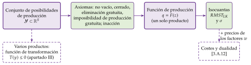
Fuente: elaboración propia.
En el cante: el conjunto de posibilidades de producción en el plano de los netputs, con un axioma por capa (gráfico 2); la función de producción como su frontera eficiente, la superficie en tres dimensiones (gráfico 3) y sus propiedades; después, su curvatura, distinguiendo cuasiconcavidad (isocuantas convexas) y concavidad (rendimientos no crecientes); las isocuantas con sus propiedades, la RMST, las isoclinas y la elasticidad de sustitución, y la Cobb-Douglas, la CES con sus límites (gráfico 8) y la de Leontief. Las propiedades de escala del conjunto se dicen en una frase; el recuadro sobre concavidad y beneficio, la interpretación de \(\sigma\) por precios y la evidencia empírica son de profundización.
Material complementario:
Policonomics, «Producción I» (región económica de producción): https://policonomics.
com/ es/ lp- produccion1/ Policonomics, «Producción II» (producción a corto plazo): https://policonomics.
com/ es/ lp- produccion2/ Policonomics, vídeo «B.1 Función de producción»: https://policonomics.
com/ es/ video- b1- funcion- produccion/ Fuleky (2006), gráficos tridimensionales de la Cobb-Douglas (copia archivada): https://web.
archive. org/ web/ 20260222212443/ http:/ / www2. hawaii. edu/ ~fuleky/ anatomy/ anatomy. html History of Economic Thought, Neoclassical Theories of Production: https://www.
hetwebsite. net/ het/ essays/ product/ prodcont. htm
I.1. Conjunto tecnológico: el conjunto de posibilidades de producción
Definición
El conjunto de posibilidades de producción (o conjunto tecnológico) es el conjunto de todos los planes de producción que permite la tecnología de la empresa. Es la forma más general de representarla, porque no presupone cuántos bienes se producen ni cuáles son factores (Mas-Colell, Whinston y Green, 1995, cap. 5).
Con \(S\) bienes, cada plan es un vector de producción neta (netput): \[\vec{y}=(y_1,y_2,\dots,y_S)\in\mathbb{R}^S, \tag{1}\] cuyos componentes negativos son cantidades de factores empleados y los positivos, cantidades de productos obtenidos. Un mismo bien puede ser factor en un plan y producto en otro.
El conjunto es \(\mathcal{Y}\subset\mathbb{R}^S\): las combinaciones de factores y productos que la tecnología existente hace posibles.
Dos casos particulares ordenan la exposición:
un solo producto y varios factores: la frontera de \(\mathcal{Y}\) puede describirse con una función de producción \(q=F(\vec{z})\), donde \(q\) es el producto y \(\vec{z}=(z_L,z_K)\), los factores (apartado I.2);
varios productos: la frontera se describe con una función de transformación, y se estudia en el apartado III.
Para cada nivel de producción \(q\), el conjunto de requerimientos de factores, \(V(q)=\{\vec{z}\geq\vec{0}:\ (q,-\vec{z})\in\mathcal{Y}\}\), reúne las combinaciones de factores que permiten obtener al menos \(q\); su frontera es la isocuanta (apartado I.3) (Varian, 1992, cap. 1).
Propiedades (axiomas)
Los axiomas básicos, que permiten representar la tecnología con una función de producción, son (Mas-Colell, Whinston y Green, 1995, párr. 5.B):
No vacío: \(\mathcal{Y}\neq\varnothing\). Hay al menos un plan posible; de lo contrario no habría actividad productiva. Es poco restrictivo.
Cerrado: \(\mathcal{Y}\) incluye su frontera, de modo que el límite de una sucesión de planes posibles también es posible. Es poco restrictivo y garantiza que exista un máximo de producción para cada vector de factores.
Eliminación gratuita: si \(\vec{y}\in\mathcal{Y}\) e \(\vec{y}'\leq\vec{y}\), entonces \(\vec{y}'\in\mathcal{Y}\). Si un plan es posible, también lo es cualquier otro que emplee iguales o más factores y obtenga iguales o menos productos: se puede desperdiciar capacidad productiva sin coste. Implica que la frontera del conjunto es no creciente.
Imposibilidad de producción gratuita: \(\mathcal{Y}\cap\mathbb{R}^S_+\subseteq\{\vec{0}\}\). No se obtiene ningún producto sin emplear algún factor.
A ellos se suele añadir la posibilidad de inacción, \(\vec{0}\in\mathcal{Y}\): la empresa puede no producir.4 Con ella y la imposibilidad de producción gratuita, \(\mathcal{Y}\cap\mathbb{R}^S_+=\{\vec{0}\}\): la frontera pasa por el origen.
Estos axiomas bastan para que exista la función de producción y tenga sus propiedades generales (apartado I.2). Lo que decide su curvatura, como la convexidad del conjunto, son supuestos adicionales que se añaden después.5
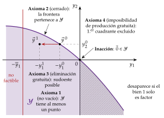
Fuente: elaboración propia a partir de Segura (1996) y Mas-Colell, Whinston y Green (1995, párr. 5.B).
En el gráfico 2 hay 2 bienes, \(y_1\) e \(y_2\), y la tecnología permite usar el bien 1 para producir el 2 o el 2 para producir el 1: la frontera de \(\mathcal{Y}\) pasa por los cuadrantes segundo y cuarto y por el origen. Si el bien 1 solo pudiera ser factor y el 2 solo producto, el conjunto se restringiría al segundo y tercer cuadrantes. Con este gráfico se ve lo que implica cada axioma:
El axioma 1 (no vacío) garantiza que \(\mathcal{Y}\) tiene al menos un punto.
El axioma 2 (cerrado) garantiza que la frontera de \(\mathcal{Y}\) está incluida en el conjunto.
El axioma 3 (eliminación gratuita) señala que, si para producir \(y_2^0\) basta la cantidad de factor \(-y_1^0\), la misma producción puede conseguirse con más factor, \(-y_1^1>-y_1^0\): todo el «sudoeste» de un plan posible es posible, y la frontera de \(\mathcal{Y}\) es monótona no creciente.
El axioma 4 (imposibilidad de producción gratuita) impide producir sin factores: ningún punto del primer cuadrante distinto del origen pertenece a \(\mathcal{Y}\). Con la posibilidad de inacción, la frontera pasa por el origen.
La frontera de \(\mathcal{Y}\) reúne los planes técnicamente eficientes: aquellos en los que no es posible obtener más de un producto sin emplear más de algún factor u obtener menos de otro producto.
Si la empresa dispone de una dotación \(\overline{y}_1\) del bien 1 como factor, los planes que usan más de esa cantidad (a la izquierda de la vertical en \(-\overline{y}_1\)) no son factibles: el conjunto factible es \(\mathcal{Y}\cap\{\vec{y}:\ y_1\geq-\overline{y}_1\}\). Del mismo modo, fijar un factor (\(z_K=\overline{z}_K\)) restringe el conjunto de producción al de corto plazo (apartado II.1).
I.2. La función de producción
Definición
Una vez definido el conjunto tecnológico y sus axiomas, pasamos a obtener de él la función de producción. Con un solo producto, la frontera de \(\mathcal{Y}\) se describe con la función de producción: la relación puramente técnica que asocia a cada vector de factores \(\vec{z}=(z_1,\dots,z_n)\geq\vec{0}\) la máxima cantidad de producto que permite la tecnología,
\[q=F(\vec{z})\equiv\begin{array}{rl}\displaystyle \max_{q\geq 0} & \displaystyle q \\ \text{s.a.} & (q,-\vec{z})\in\mathcal{Y}\end{array}\tag{2}\]
El máximo existe porque \(\mathcal{Y}\) es cerrado. Con 2 factores, trabajo y capital, \(\vec{z}=(z_L,z_K)\) y \(q=F(z_L,z_K)\): la función es una superficie de producción sobre el plano de los factores, y los planes posibles son los puntos que quedan sobre la base y por debajo de ella (gráfico 3).
Por construcción, \(F\) recoge solo los métodos técnicamente eficientes:
un método de producción es una combinación concreta de factores por unidad de producto;
un método es más eficiente que otro si usa menos de al menos un factor y no más de ninguno para la misma producción (si uno usa menos de un factor y más de otro, no son comparables);
la función de producción reúne todos los métodos eficientes: a cada combinación de factores le asigna el máximo producto, o, lo que es lo mismo, a cada producción, las cantidades mínimas de factores.
La notación de la producción como función general de los factores, \(P=f(a,b,c,\dots)\), se debe a Wicksteed (1894), que la usa para demostrar que, con rendimientos constantes, pagar a cada factor su productividad marginal agota el producto; von Thünen ya había empleado formas algebraicas concretas antes de 1850 (Humphrey, 1997).
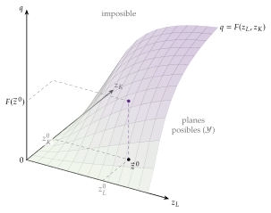
Fuente: elaboración propia a partir de Fuleky (2006).
Propiedades
De los axiomas básicos se siguen las propiedades generales de \(F\):
es cardinal: el producto se mide en unidades físicas y su valor tiene significado, a diferencia de la utilidad, que es ordinal [ver tema 3.A.8];
\(F(\vec{0})=0\), por la imposibilidad de producción gratuita y la posibilidad de inacción;
es no decreciente, por la eliminación gratuita: las productividades marginales \(\mathrm{PMg}_i\equiv\partial F/\partial z_i\) son no negativas;
se supone continua y dos veces diferenciable, para poder usar el cálculo diferencial.6
Curvatura y propiedades de escala
Los axiomas básicos no dicen nada de la curvatura de \(F\). Para decir algo hay que añadir al conjunto \(\mathcal{Y}\) propiedades de escala, que deciden la forma de la frontera y los rendimientos a escala globales (apartado II.2) (Mas-Colell, Whinston y Green, 1995, párr. 5.B):
Divisibilidad (rendimientos no crecientes): si \(\vec{y}\in\mathcal{Y}\), entonces \(\lambda\vec{y}\in\mathcal{Y}\) para todo \(\lambda\in[0,1]\). Todo plan puede reducirse de escala.
Aditividad (libre entrada): si \(\vec{y},\vec{y}'\in\mathcal{Y}\), entonces \(\vec{y}+\vec{y}'\in\mathcal{Y}\). Dos plantas pueden funcionar a la vez sin estorbarse; en particular, todo plan puede replicarse (\(\lambda\vec{y}\in\mathcal{Y}\) para todo entero \(\lambda\geq 1\)): rendimientos no decrecientes.
Rendimientos constantes: si \(\vec{y}\in\mathcal{Y}\), entonces \(\lambda\vec{y}\in\mathcal{Y}\) para todo \(\lambda\geq 0\); \(\mathcal{Y}\) es un cono.
Convexidad: si \(\vec{y},\vec{y}'\in\mathcal{Y}\) y \(\tau\in[0,1]\), entonces \(\tau\vec{y}+(1-\tau)\vec{y}'\in\mathcal{Y}\) (gráfico 4). Con la inacción, implica la divisibilidad (rendimientos no crecientes) y que las combinaciones equilibradas de factores rinden al menos tanto como las extremas.
Irreversibilidad: si \(\vec{y}\in\mathcal{Y}\) e \(\vec{y}\neq\vec{0}\), entonces \(-\vec{y}\notin\mathcal{Y}\). No se pueden recuperar los factores invirtiendo el proceso.
Estas propiedades se combinan: \(\mathcal{Y}\) es aditivo y tiene rendimientos no crecientes si y solo si es un cono convexo, es decir, si tiene rendimientos constantes (Mas-Colell, Whinston y Green, 1995, prop. 5.B.2). La divisibilidad excluye los rendimientos crecientes y la aditividad, los decrecientes.
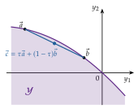
Fuente: elaboración propia.
La curvatura de \(F\) informa de 2 cosas distintas, que se suponen según el problema:
La complementariedad entre factores. Si las combinaciones intermedias producen más que las extremas, \(F\) es estrictamente cuasicóncava: los conjuntos de requerimientos \(V(q)\) son estrictamente convexos, es decir, las isocuantas son estrictamente convexas (Jehle y Reny, 2011, cap. 3).7 No impone ningún tipo de rendimientos a escala.
Las características de escala. Con un solo producto, \(\mathcal{Y}\) es convexo si y solo si \(F\) es cóncava:
si además \(F(\vec{0})=0\), una función cóncava tiene rendimientos a escala no crecientes, y la concavidad estricta implica rendimientos estrictamente decrecientes;
toda función cóncava es cuasicóncava, pero no al revés: una Cobb-Douglas con \(\alpha+\beta>1\) tiene isocuantas convexas y rendimientos crecientes.
La homogeneidad de grado uno (rendimientos constantes) es la hipótesis habitual en la teoría de la distribución, del crecimiento y del comercio. Una función homogénea de grado uno con isocuantas convexas es cóncava, pero nunca estrictamente: es lineal a lo largo de cada rayo que sale del origen.
La función neoclásica de buen comportamiento combina rendimientos constantes a escala, productividades marginales positivas y decrecientes en cada factor y las condiciones de Inada (Inada, 1963), habituales en la teoría del crecimiento: \[\lim_{z_K\to 0}\mathrm{PMg}_K=\lim_{z_L\to 0}\mathrm{PMg}_L=+\infty,\qquad \lim_{z_K\to\infty}\mathrm{PMg}_K=\lim_{z_L\to\infty}\mathrm{PMg}_L=0. \tag{3}\] Es cóncava, pero no estrictamente. La diferencia entre cuasiconcavidad y concavidad importa para el problema del productor, como explica el recuadro siguiente.
Concavidad, cuasiconcavidad y maximización del beneficio. En la teoría del consumidor basta con que la utilidad sea cuasicóncava para que la tangencia sea un máximo, porque el gasto está acotado por la renta. En la empresa que maximiza el beneficio \(B=p\,F(\vec{z})-\vec{w}\cdot\vec{z}\) no hay renta que acote el problema, y la cuasiconcavidad no basta (Varian, 1992, cap. 2) (Mas-Colell, Whinston y Green, 1995, párr. 5.C). El gráfico 5 lo muestra con 3 funciones cuasicóncavas, con las mismas isocuantas, que tienen rendimientos a escala distintos: en la primera fila, sus superficies; en la segunda, el corte de cada una por el plano vertical que contiene un rayo desde el origen, que es convexo, recto o cóncavo, y en la tercera, el mapa de isocuantas común a las 3, con el nivel de producción que cada una asigna a los puntos del rayo.
Con rendimientos constantes, \(B(\lambda\vec{z})=\lambda\,B(\vec{z})\) para todo \(\lambda>0\). Si algún plan da beneficio positivo, multiplicarlo por \(\lambda\) multiplica el beneficio: el problema no está acotado. Si todos dan beneficio negativo, el óptimo es no producir. Solo si el beneficio máximo es exactamente cero hay solución, y entonces la escala queda indeterminada: la oferta no es una función, sino una correspondencia.
Con rendimientos crecientes, \(F(\lambda\vec{z})>\lambda\,F(\vec{z})\) para \(\lambda>1\): al ampliar la escala, el ingreso crece más deprisa que el coste, de modo que cualquier plan con beneficio positivo puede mejorarse aumentándolo, y el problema tampoco está acotado. Un punto que cumpla las condiciones de primer orden no es, en general, un máximo.
Con rendimientos estrictamente decrecientes (concavidad estricta), las condiciones de primer orden son necesarias y suficientes y la oferta es una función.
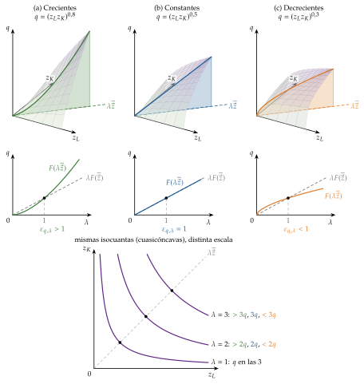
Fuente: elaboración propia a partir de Fuleky (2006).
Los problemas acotados por construcción (maximizar la producción con un coste dado o minimizar el coste de un nivel de producción) solo necesitan cuasiconcavidad, como en la teoría del consumidor; por eso la función de costes existe con cualquier tipo de rendimientos [ver tema 3.A.12]. La tabla 1 resume las definiciones y sus relaciones, y el problema del productor se resume en el anexo B.
| \(F\) es cóncava | \(\Longleftrightarrow\) | el conjunto de puntos por debajo de su gráfica es convexo |
| \(F\) es convexa | \(\Longleftrightarrow\) | el conjunto de puntos por encima de su gráfica es convexo |
| \(F\) es cuasicóncava | \(\Longleftrightarrow\) | sus conjuntos de contorno superior, \(\{\vec{z}:\ F(\vec{z})\geq q\}\), son convexos |
| \(F\) es cuasiconvexa | \(\Longleftrightarrow\) | sus conjuntos de contorno inferior, \(\{\vec{z}:\ F(\vec{z})\leq q\}\), son convexos |
| \(F\) cóncava | \(\Longrightarrow\) | \(F\) cuasicóncava (no al revés) |
| \(F\) convexa | \(\Longrightarrow\) | \(F\) cuasiconvexa (no al revés) |
| \(F\) (estrictamente) cóncava | \(\Longleftrightarrow\) | \(-F\) (estrictamente) convexa |
| \(F\) (estrictamente) cuasicóncava | \(\Longleftrightarrow\) | \(-F\) (estrictamente) cuasiconvexa |
Fuente: elaboración propia a partir de Jehle y Reny (2011, cap. A1).
I.3. Las curvas isocuantas
Definición
Con la función de producción y su curvatura ya caracterizadas, pasamos a estudiar sus curvas de nivel. Una isocuanta es el lugar geométrico de las combinaciones de factores que, usadas eficientemente, dan el mismo nivel de producción: \[\{\vec{z}:\ F(\vec{z})=\overline{q}\}. \tag{4}\] Es la frontera del conjunto de requerimientos \(V(\overline{q})\) y la curva de nivel de la superficie de producción: si se corta la superficie \(q=F(z_L,z_K)\) por un plano horizontal a la altura \(\overline{q}\) y se proyecta el corte sobre la base, se obtiene la isocuanta de nivel \(\overline{q}\) (gráfico 7).
Propiedades
Las isocuantas tienen estas propiedades, cada una con el supuesto que la garantiza (como las curvas de indiferencia [ver tema 3.A.8]):
hay una isocuanta por cada nivel de producción, infinitas, porque el producto es divisible;
las más alejadas del origen representan más producto, por la monotonía;
no se cortan: \(F\) es una función (asigna un solo nivel máximo a cada \(\vec{z}\)), de modo que un punto no puede pertenecer a dos isocuantas de niveles distintos;
son continuas, por la continuidad de \(F\);
tienen pendiente no positiva, por la eliminación gratuita, y estrictamente negativa si las productividades marginales son positivas: para producir lo mismo con menos de un factor hay que usar más del otro;
son convexas si \(F\) es cuasicóncava (estrictamente convexas si es estrictamente cuasicóncava);
ordenan los niveles de producción de forma cardinal, no ordinal como las curvas de indiferencia.
En el apartado II.1 se usa una función que relaja la eliminación gratuita, y entonces las isocuantas tienen tramos crecientes: no es una contradicción, sino una forma de delimitar dónde es eficiente producir.
La pendiente de la isocuanta se obtiene diferenciando \(F\) con \(dq=0\): \(dq=\mathrm{PMg}_L\,dz_L+\mathrm{PMg}_K\,dz_K=0\). Su valor absoluto es la relación marginal de sustitución técnica8 (gráfico 6): \[\mathrm{RMST}_{LK}\equiv-\left.\frac{dz_K}{dz_L}\right|_{q=\overline{q}}=\frac{\mathrm{PMg}_L}{\mathrm{PMg}_K}, \tag{5}\] la cantidad de capital que puede dejar de usarse al emplear una unidad más de trabajo sin que cambie la producción. Equivale al cociente de las productividades marginales.
Con isocuantas estrictamente convexas, la RMST disminuye a lo largo de la isocuanta conforme aumenta \(z_L\): cuanto más trabajo y menos capital se usa, menos capital libera una unidad adicional de trabajo.
La RMST mide la sustituibilidad de los factores, pero depende de sus unidades de medida.
Las curvas que unen los puntos de distintas isocuantas con la misma RMST se llaman isoclinas. Pueden tener cualquier forma: si la función es homotética, son rectas que pasan por el origen (apartado II.2), como la curva de renta-consumo con preferencias homotéticas [ver tema 3.A.8]; las líneas de contorno que delimitan la región económica son isoclinas (apartado II.1), y, con precios de los factores dados, la senda de expansión de la empresa también lo es [ver tema 3.A.12].
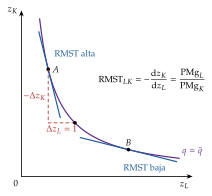
Fuente: elaboración propia.
Elasticidad de sustitución
La elasticidad de sustitución es un número puro, independiente de las unidades, que mide la curvatura de la isocuanta: la variación porcentual de la proporción entre factores ante una variación porcentual de la RMST,
\[\sigma\equiv\frac{d\ln(z_K/z_L)}{d\ln \mathrm{RMST}_{LK}}=\frac{d(z_K/z_L)}{d\mathrm{RMST}_{LK}}\cdot\frac{\mathrm{RMST}_{LK}}{z_K/z_L}\geq 0\tag{6}\]
Es la misma definición que en la teoría del consumidor [ver tema 3.A.8].
Origen: la introducen, de forma independiente, Hicks (1932, 117), como «una medida de la facilidad con la que el factor variable puede sustituirse por otros», y Robinson (1933), para estudiar cómo se reparte la renta entre capital y trabajo cuando cambia su abundancia relativa (The History of Economic Thought Website, 2026b).
Curvatura: cuanto mayor es \(\sigma\), menos curvada es la isocuanta y más fácil es sustituir un factor por otro: basta una pequeña variación de la RMST para acomodar un cambio grande en la proporción de factores, porque las productividades marginales son poco sensibles a esa proporción. Con sustitutivos perfectos (isocuantas rectas), \(\sigma=\infty\); con coeficientes fijos (isocuantas en ángulo recto), \(\sigma=0\).
Interpretación económica: si la empresa minimiza costes, iguala la RMST al precio relativo de los factores, \(\mathrm{RMST}_{LK}=w_L/w_K\) [ver tema 3.A.12]. Entonces \(\sigma=d\ln(z_K/z_L)/d\ln(w_L/w_K)\): el porcentaje en que la empresa sustituye trabajo por capital cuando el salario relativo sube un 1 %.
Distribución: el cociente entre las rentas de los factores es \(\dfrac{w_Lz_L}{w_Kz_K}=\dfrac{w_L/w_K}{z_K/z_L}\). Si \(\sigma<1\), una subida del salario relativo aumenta la participación del trabajo (la proporción de factores cambia menos que su precio); si \(\sigma>1\), la reduce, y si \(\sigma=1\), las participaciones no cambian (Hicks, 1932).
Con más de 2 factores, la elasticidad de sustitución admite varias generalizaciones (de Allen-Uzawa y de Morishima), que se presentan en el anexo D.
La elasticidad de sustitución ordena las formas funcionales más usadas: la Cobb-Douglas (\(\sigma=1\)), la CES (\(\sigma\) constante cualquiera) y, en sus extremos, la de Leontief (\(\sigma=0\)) y la lineal (\(\sigma=\infty\)). Cada una se presenta como un modelo.
I.3.1. La función Cobb-Douglas
a) Idea
La función Cobb-Douglas es la forma funcional más sencilla con buen comportamiento y la más usada de todo el temario (crecimiento, ciclo real, distribución, comercio). Toma su nombre de Cobb y Douglas (1928), que la estimaron por primera vez, aunque la forma ya aparece en Wicksell (1901) y, antes, en von Thünen (Sandelin, 1976; Humphrey, 1997).
b) Modelo
i) Supuestos
Con 2 factores, \[q=A\,z_K^{\alpha}z_L^{\beta},\qquad A,\alpha,\beta>0, \tag{7}\] donde \(A\) es el nivel tecnológico y \(\alpha\) y \(\beta\), las elasticidades-producto de cada factor.
ii) Desarrollo
Sus propiedades resumen lo visto hasta ahora (gráfico 7):
Productividades: \(\mathrm{PMg}_K=\alpha\,q/z_K\) y \(\mathrm{PMg}_L=\beta\,q/z_L\), es decir, cada productividad marginal es el exponente por la productividad media. Son positivas y, si \(\alpha,\beta<1\), decrecientes; se cumplen las condiciones de Inada (3), de modo que toda la función está en la región económica de producción (apartado II.1). Las elasticidades-producto son constantes e iguales a los exponentes: \(\varepsilon_{q,z_K}=\alpha\), \(\varepsilon_{q,z_L}=\beta\).
Sustitución: \(\mathrm{RMST}_{LK}=\dfrac{\beta}{\alpha}\cdot\dfrac{z_K}{z_L}\), que depende solo de la proporción de factores y decrece a lo largo de la isocuanta, convexa y asintótica a los ejes. Tomando logaritmos, \(\ln(z_K/z_L)=\ln \mathrm{RMST}_{LK}+\ln(\alpha/\beta)\), luego \(\sigma=1\) en todo punto.
Escala: \(F(\lambda\vec{z})=\lambda^{\alpha+\beta}F(\vec{z})\). Es homogénea de grado \(\alpha+\beta\), con rendimientos crecientes, constantes o decrecientes según \(\alpha+\beta\) sea mayor, igual o menor que 1 (apartado II.2).
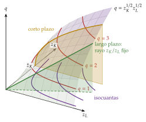
Fuente: elaboración propia a partir de Fuleky (2006).
iii) Implicaciones
Distribución: con rendimientos constantes (\(\beta=1-\alpha\)) y factores pagados según su productividad marginal, el teorema de Euler da \(q=\mathrm{PMg}_K\,z_K+\mathrm{PMg}_L\,z_L\): las remuneraciones agotan el producto y las participaciones en la renta son constantes, \(\alpha\) para el capital y \(1-\alpha\) para el trabajo, sea cual sea la proporción de factores. Por eso, en macroeconomía, \(Y=AK^{\alpha}L^{1-\alpha}\), con \(\alpha\) igual a la participación del capital en la renta [ver tema 3.A.43] [ver tema 3.A.45].
Progreso técnico: los progresos técnicos neutrales de Hicks, Harrod y Solow coinciden (apartado II.3). Es la tecnología de referencia de los modelos de crecimiento [ver tema 3.A.43] y de ciclo real [ver tema 3.A.42].
c) Evidencia empírica
Cobb y Douglas (1928) la estimaron para la industria manufacturera de Estados Unidos de 1899 a 1922 y obtuvieron \(q\approx 1{,}01\,z_K^{1/4}z_L^{3/4}\): exponentes que suman 1, es decir, rendimientos constantes, y que se aproximaban a las participaciones observadas del capital y del trabajo (Douglas, 1976).
d) Valoración
Su sencillez tiene un precio: impone \(\sigma=1\) y, con ella, participaciones de los factores constantes, que no responden a sus precios relativos. Para que la elasticidad de sustitución sea un parámetro que se estima, y no un supuesto, hace falta una forma más general: la CES.
I.3.2. La función de elasticidad de sustitución constante (CES)
a) Idea
b) Modelo
i) Supuestos
Con \(n\) factores, \[q=A\left[\sum_{i=1}^{n}a_i\,z_i^{\rho}\right]^{\frac{\nu}{\rho}},\qquad \rho\equiv\frac{\sigma-1}{\sigma},\qquad A,a_i,\nu>0,\qquad \textstyle\sum_ia_i=1. \tag{8}\]
ii) Desarrollo
Es homogénea de grado \(\nu\); con \(\nu=1\), de rendimientos constantes, que es la forma habitual. Con 2 factores, \(\mathrm{RMST}_{LK}=\dfrac{a_L}{a_K}\left(\dfrac{z_K}{z_L}\right)^{1-\rho}\), de modo que \(\ln(z_K/z_L)=\frac{1}{1-\rho}\ln \mathrm{RMST}_{LK}+\text{cte.}\) y \(\sigma=\dfrac{1}{1-\rho}\), constante.
Contiene como límites, no como casos exactos (en \(\rho=0\) la expresión no está definida), las 3 formas clásicas (gráfico 8; derivación en el anexo A.1):
\(\sigma\to\infty\) (\(\rho\to 1\)): función lineal o de sustitutivos perfectos, \(q=A\,(a_Kz_K+a_Lz_L)^{\nu}\): isocuantas rectas y RMST constante;
\(\sigma\to 1\) (\(\rho\to 0\)): Cobb-Douglas, \(q=A\,z_K^{\nu a_K}z_L^{\nu a_L}\);
\(\sigma\to 0\) (\(\rho\to-\infty\)): coeficientes fijos o de Leontief, \(q=A\min\{z_K,\,z_L\}^{\nu}\), que con los factores medidos en unidades \(z_K/a\) y \(z_L/b\) es \(q=\min\{z_K/a;\,z_L/b\}\) (apartado I.3.3).
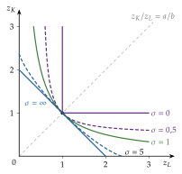
Fuente: elaboración propia basada en Besanko, Braeutigam y Gibbs (2020).
iii) Implicaciones
Fuera del caso \(\sigma=1\), la participación de cada factor varía con su precio relativo según la regla de Hicks; por eso la CES es la forma habitual para estimar \(\sigma\) entre capital y trabajo. Con \(\sigma>1\) ningún factor es imprescindible y, en los modelos de crecimiento, la producción por trabajador puede crecer sin límite aunque el capital tenga rendimientos decrecientes [ver tema 3.A.44]; el mismo agregador, con \(\sigma>1\) entre variedades, es el de Dixit y Stiglitz [ver tema 3.A.18].
c) Evidencia empírica
Las estimaciones de la elasticidad de sustitución entre capital y trabajo suelen quedar por debajo de la unidad:
entre 0,4 y 0,6 según la revisión de Chirinko (2008), y en torno a 0,3 en el metaanálisis de Gechert et al. (2022) una vez corregido el sesgo de publicación (véase también Knoblach, Roessler y Zwerschke, 2020);
además, la elasticidad agregada no coincide con la de cada planta: suma la sustitución dentro de las plantas y la reasignación entre ellas, y para la industria manufacturera de Estados Unidos se estima entre 0,5 y 0,7 (Oberfield y Raval, 2021).
La Cobb-Douglas (\(\sigma=1\)) es, por tanto, una simplificación cómoda, no un hecho empírico.
d) Valoración
La CES deja estimar \(\sigma\), pero la supone igual en todos los puntos y entre todos los pares de factores. Las formas flexibles, como la translog, no imponen esa restricción (anexo C). En el extremo opuesto a la sustitución perfecta está la ausencia de sustitución: la función de Leontief.
I.3.3. La función de coeficientes fijos (Leontief)
a) Idea
Es el límite de la CES con \(\sigma\to 0\): cada unidad de producto exige cantidades fijas de cada factor y no hay sustitución posible. Cassel (1918) ya describía la producción con coeficientes técnicos fijos (Humphrey, 1997), y Leontief (1936) la convierte en la tecnología de las tablas input-output [ver tema 3.A.31].
b) Modelo
i) Supuestos
Con \(a\) y \(b\) las cantidades de capital y de trabajo necesarias por unidad de producto (los coeficientes técnicos), \[q=\min\left\{\frac{z_K}{a};\ \frac{z_L}{b}\right\},\qquad a,b>0. \tag{9}\]
ii) Desarrollo
Las isocuantas forman un ángulo recto con el vértice sobre el rayo \(z_K/z_L=a/b\) (gráfico 8): fuera del vértice, el factor que sobra tiene productividad marginal nula, y la RMST es \(0\) o \(\infty\). Por tanto \(\sigma=0\).
Es homogénea de grado 1: rendimientos constantes a escala.
iii) Implicaciones
La proporción eficiente de factores no depende de sus precios: minimizar costes es producir en el vértice, con \(z_K=a\,q\) y \(z_L=b\,q\), y el coste es lineal en la producción, \(C=(a\,w_K+b\,w_L)\,q\) [ver tema 3.A.12].
c) Extensiones
Si la empresa dispone de varias técnicas de coeficientes fijos y puede combinarlas, las isocuantas son poligonales, con un vértice por técnica, y se aproximan a las curvas suaves cuando el número de técnicas crece: es el análisis de actividades de Koopmans (1951), que enlaza la función de producción con el conjunto de posibilidades de producción del apartado I.1.
d) Valoración
Es útil cuando la sustitución es despreciable (a corto plazo, en el análisis intersectorial), pero a largo plazo las empresas sí sustituyen factores, como muestra la evidencia sobre \(\sigma\).
Recapitulando, la tecnología se representa con el conjunto de posibilidades de producción; con un producto, sus axiomas permiten resumirla en una función de producción, y sus isocuantas, con la RMST y la elasticidad de sustitución, miden cuánto se pueden sustituir los factores, desde la sustitución perfecta hasta los coeficientes fijos. La superficie de producción nos sirve ahora de mapa para el bloque siguiente: cada plazo es un corte distinto de ella.
II. Análisis de la función de producción: las leyes temporales de la producción
Una vez caracterizada la tecnología en abstracto, pasamos a analizar cómo varía lo posible según el plazo. Este segundo bloque responde a la segunda pregunta: cómo responde la producción cuando cambian los factores o la tecnología. Su conclusión anticipada: los 3 plazos de Marshall son 3 cortes de la misma superficie de producción; a corto plazo manda la ley de rendimientos decrecientes; a largo plazo, los rendimientos a escala, que pueden ser globales o cambiar con la escala (locales), y a muy largo plazo, el progreso técnico, cuya neutralidad depende de qué se mantenga constante.
El análisis por horizontes temporales procede de Marshall (1890, lib. V, cap. V), que distingue el periodo de mercado (oferta fija), el corto plazo (capacidad fija), el largo plazo (todos los factores variables) y los movimientos seculares, en los que cambian el conocimiento, la población y el capital. Los 3 plazos de la teoría de la producción son los 3 últimos: no son periodos de calendario, sino grados de libertad de la empresa. En términos de la superficie de producción (gráfico 9):
Corto plazo: algún factor es fijo (normalmente el capital, \(z_K=\overline{z}_K\)) y otros variables (normalmente el trabajo). Se corta la superficie por un plano \(z_K=\overline{z}_K\) y se estudia la productividad del trabajo.
Largo plazo: todos los factores son variables. Se corta la superficie a lo largo de un rayo que sale del origen y se estudia cómo responde la producción a variaciones equiproporcionales de todos los factores: los rendimientos a escala.
Muy largo plazo: también cambia la tecnología. El conjunto de producción se amplía y la superficie se desplaza hacia arriba: es el progreso técnico.
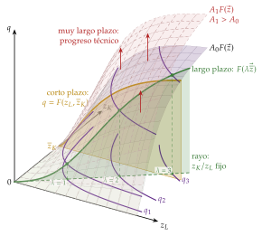
Fuente: elaboración propia a partir de Fuleky (2006).
En el cante: la superficie con los 3 plazos (gráfico 9), que se repite al empezar cada apartado resaltando su parte; el corto plazo como corte del conjunto de producción, la advertencia sobre la eliminación gratuita y la región económica (brevemente: es lo primero que se recorta si falta tiempo), el gráfico de producto total, medio y marginal con sus etapas (gráfico 12) y la elasticidad-producto; los rendimientos a escala con las isocuantas sobre un rayo (gráfico 15), la elasticidad de escala, la diferencia entre rendimientos globales (funciones homogéneas, \(\mathcal{Y}\) como cono) y locales (suma de elasticidades-producto, tecnología «en S» de los gráficos 17 y 18) y la distinción entre rendimientos y economías de escala; y las 3 neutralidades del progreso técnico, dibujando solo el panel de Hicks (gráfico 21). Las causas de los rendimientos, el recuadro de funciones homogéneas y homotéticas, la evidencia empírica y el sesgo del progreso técnico son de profundización.
II.1. Corto plazo: productividad
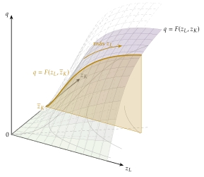
Fuente: elaboración propia a partir de Fuleky (2006).
Empezamos por el plazo más corto, en el que algún factor está fijo. Formalmente, el corto plazo restringe el conjunto de posibilidades de producción a los planes con el factor fijo dado: \(\mathcal{Y}(\overline{z}_K)=\{\vec{y}\in\mathcal{Y}:\ z_K=\overline{z}_K\}\subseteq\mathcal{Y}\). Como hay planes del largo plazo que dejan de ser posibles, la producción máxima a largo plazo es siempre al menos tan alta como la de corto, y el coste de largo plazo es la envolvente de los de corto plazo [ver tema 3.A.12]. El conjunto de corto plazo no cumple la posibilidad de inacción si el factor fijo tiene un coste hundido (Mas-Colell, Whinston y Green, 1995, párr. 5.B). Sobre la superficie, es el corte por el plano \(z_K=\overline{z}_K\) (gráfico 10).
II.1.1. Región económica de la producción
Para estudiar la productividad a corto plazo se usa una función con rendimientos marginales mixtos: al añadir un factor variable (\(z_L\)) a uno fijo (\(z_K=\overline{z}_K\)), la producción crece primero a ritmo creciente, después a ritmo decreciente10 hasta alcanzar un máximo y, si se sigue añadiendo factor variable, disminuye (gráfico 12).
Esta función incumple la eliminación gratuita en su último tramo: si sobra trabajo, la empresa podría no usarlo y mantener la producción, de modo que una productividad marginal negativa no es técnicamente eficiente. No es una función neoclásica de buen comportamiento: no es monótona y sus isocuantas no son decrecientes en todos sus tramos. El problema no está en la productividad marginal decreciente, sino en que llegue a ser negativa.11 Se mantiene por 2 motivos:
histórico: el análisis por etapas es anterior a la axiomática de la tecnología. Lo sistematiza Cassels (1936), y el conjunto de posibilidades de producción con sus axiomas llega después, con Koopmans (1951) y Debreu (1959); los manuales lo han conservado desde entonces;
didáctico: permite ver en una sola función todos los tramos de la productividad y delimitar dónde es eficiente producir: la región económica.
Conviene advertir al tribunal, antes de dibujar la función con tramo decreciente, que se relaja la eliminación gratuita, y explicar por qué: es la forma clásica de presentar las etapas, anterior a la axiomática, y sirve para delimitar la región económica. Con una función neoclásica de buen comportamiento, como la Cobb-Douglas con exponentes menores que 1, toda la función está en la región económica.
Dado el mapa de isocuantas del gráfico 11, si se mantiene el capital en \(\overline{z}_K\) y se aumenta el trabajo, la producción crece hasta el punto \(A\): la productividad marginal del trabajo es positiva en ese tramo. A partir de \(A\), más trabajo lleva a isocuantas de nivel cada vez menor: la productividad marginal del trabajo es negativa.12
El lugar geométrico de los puntos en los que la productividad marginal de un factor es nula son las líneas de contorno: en la superior, \(\mathrm{PMg}_K=0\); en la inferior, \(\mathrm{PMg}_L=0\). A lo largo de cada una la RMST es constante, igual a \(\infty\) en la superior y a \(0\) en la inferior: las líneas de contorno son, por tanto, isoclinas.
Entre las líneas de contorno las dos productividades marginales son positivas: es la región económica de la producción, la zona de sustitución en la que puede obtenerse la misma producción de forma técnicamente eficiente con distintas combinaciones de factores. Dentro de ella, si aumenta un factor, para mantener la producción tiene que disminuir el otro, y si se mantiene uno y aumenta el otro, se pasa a una isocuanta de nivel mayor.
Fuera de ella, la misma producción se obtiene con más cantidad de algún factor: podría producirse más usando menos de él.
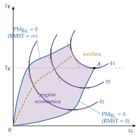
Fuente: elaboración propia a partir de Policonomics (2026a).
II.1.2. Productividad
Con el capital fijo en \(\overline{z}_K\), el producto total \(q=F(z_L,\overline{z}_K)\) crece primero a ritmo creciente, después a ritmo decreciente hasta un máximo y luego disminuye (gráfico 12, panel superior).13
Productividad media
La productividad media del factor variable es el producto total dividido por la cantidad de factor variable: \[\mathrm{PMe}_L=\frac{q}{z_L}. \tag{10}\] Gráficamente, es la pendiente del rayo que une el origen con cada punto del producto total: crece hasta que ese rayo es tangente a la curva y a partir de ahí decrece.
Productividad marginal
La productividad marginal es el aumento del producto total al aumentar en una unidad el factor variable, con el factor fijo constante: la derivada de la función de producción, referida siempre a la última unidad de factor incorporada, \[\mathrm{PMg}_L=\frac{\partial F(z_L,\overline{z}_K)}{\partial z_L}. \tag{11}\] Gráficamente, es la pendiente de la tangente al producto total. Su máximo está en el punto de inflexión del producto total, y se anula en el máximo del producto total.
Relación entre productividad media y marginal
La productividad media y la marginal son iguales cuando la media es máxima: en ese punto el rayo desde el origen (la \(\mathrm{PMe}_L\)) es tangente al producto total (la \(\mathrm{PMg}_L\)).14 Mientras \(\mathrm{PMg}_L>\mathrm{PMe}_L\), la media crece; cuando \(\mathrm{PMg}_L<\mathrm{PMe}_L\), decrece.
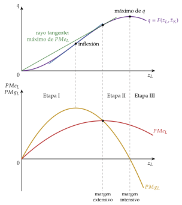
Fuente: elaboración propia a partir de Policonomics (2026b).
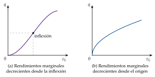
Fuente: elaboración propia.
Etapas de la producción
En esta función se distinguen, desde Cassels (1936), 3 etapas (gráfico 12 y tabla 2):
Etapa I (de \(z_L=0\) al máximo de \(\mathrm{PMe}_L\)): \(\mathrm{PMg}_L>\mathrm{PMe}_L\) y la productividad media crece. Hay demasiado factor fijo para el variable utilizado: se produce extensivamente. Si la función es homogénea de grado 1, el teorema de Euler da \(\mathrm{PMe}_L=\mathrm{PMg}_L+\mathrm{PMg}_K\,(z_K/z_L)\), de modo que \(\mathrm{PMg}_L>\mathrm{PMe}_L\) equivale a \(\mathrm{PMg}_K<0\): el factor fijo tiene productividad marginal negativa. El límite con la etapa II es el margen extensivo (u óptimo técnico).
Etapa II (del máximo de \(\mathrm{PMe}_L\) a \(\mathrm{PMg}_L=0\), el máximo del producto total): \(0<\mathrm{PMg}_L<\mathrm{PMe}_L\). Las productividades marginales de ambos factores son positivas: es la región económica. Una empresa que maximiza el beneficio produce en esta etapa; el punto concreto depende de los precios del producto y de los factores [ver tema 3.A.12] [ver tema 3.A.16]. Su límite superior es el margen intensivo (o máximo técnico).
Etapa III (\(\mathrm{PMg}_L<0\)): hay demasiado factor variable para el fijo; se produce intensivamente, y reducir \(z_L\) aumentaría la producción.
Elasticidad-producto
La elasticidad-producto del factor variable es la variación porcentual de la producción ante una variación porcentual de ese factor: \[\varepsilon_{q,z_L}\equiv\frac{\partial q/q}{\partial z_L/z_L}=\frac{\partial q}{\partial z_L}\cdot\frac{z_L}{q}=\mathrm{PMg}_L\cdot\frac{1}{\mathrm{PMe}_L}=\frac{\mathrm{PMg}_L}{\mathrm{PMe}_L}. \tag{12}\] Es mayor que 1 en la etapa I, igual a 1 en el margen extensivo, está entre 0 y 1 en la etapa II, vale 0 en el margen intensivo y es negativa en la etapa III.
Las etapas se resumen en la tabla 2, ordenadas según el valor de la elasticidad-producto: \[\varepsilon_{q,z_L}=\frac{\mathrm{PMg}_L}{\mathrm{PMe}_L}.\]
| Tramo | Productividades | \(\varepsilon_{q,z_L}\) | Factor fijo | Producción |
|---|---|---|---|---|
| Etapa I | \(\mathrm{PMg}_L>\mathrm{PMe}_L\), \(\mathrm{PMe}_L\) creciente | \(>1\) | \(\mathrm{PMg}_K<0\) (con rendimientos constantes) |
Extensiva |
| Margen extensivo | \(\mathrm{PMg}_L=\mathrm{PMe}_L\) máxima | \(=1\) | ||
| Etapa II | \(0<\mathrm{PMg}_L<\mathrm{PMe}_L\) | \((0,1)\) | \(\mathrm{PMg}_K>0\) | Región económica |
| Margen intensivo | \(\mathrm{PMg}_L=0\), \(q\) máximo | \(=0\) | ||
| Etapa III | \(\mathrm{PMg}_L<0\) | \(<0\) | \(\mathrm{PMg}_K>0\) | Intensiva |
Fuente: elaboración propia.
II.2. Largo plazo: rendimientos a escala
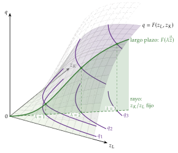
Fuente: elaboración propia a partir de Fuleky (2006).
Una vez estudiado el corto plazo, pasamos al largo plazo, en el que todos los factores son variables: tanto \(z_L\) como \(z_K\) pueden ajustarse. El concepto central son los rendimientos a escala: cómo responde la producción cuando todos los factores varían en la misma proporción. A esa variación equiproporcional se la llama variación en la escala de producción.
Gráficamente, se corta la función de producción a lo largo de un rayo que pasa por el origen, en lugar de por una recta paralela a un eje como en el corto plazo (gráfico 14).
Rendimientos a escala
Definición: una variación equiproporcional de todos los factores es \(\vec{z}\to\lambda\vec{z}\), con \(\lambda>0\) el factor de escala: \(dz_L/z_L=dz_K/z_K=d\lambda/\lambda\). Según la producción varíe en mayor, igual o menor proporción que todos los factores, los rendimientos a escala son crecientes, constantes o decrecientes: para \(\lambda>1\), \(F(\lambda\vec{z})>\lambda F(\vec{z})\), \(F(\lambda\vec{z})=\lambda F(\vec{z})\) o \(F(\lambda\vec{z})<\lambda F(\vec{z})\) (gráficos 15 y 5).
Con isocuantas de niveles \(q\), \(2q\) y \(3q\) sobre un rayo, los rendimientos son crecientes si las isocuantas están cada vez más juntas, constantes si son equidistantes y decrecientes si están cada vez más separadas. Si primero se juntan y luego se separan, los rendimientos cambian con la escala (panel d).
Causas (Varian, 1992, cap. 1):
los rendimientos crecientes se deben a la especialización y la división del trabajo (la fábrica de alfileres de Smith), a las indivisibilidades técnicas y de gestión y a relaciones físicas: duplicar el diámetro de una tubería duplica, aproximadamente, el material empleado, pero multiplica por 4 su sección;
los decrecientes, a las dificultades de coordinación y dirección cuando la empresa crece y a la presencia de factores que no se pueden ampliar (la capacidad empresarial, un recurso natural), que en rigor convierten la ampliación en un problema de proporciones variables.
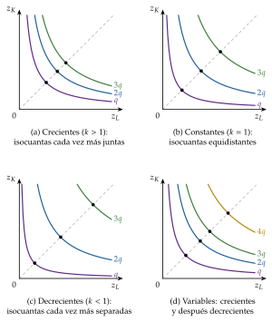
Fuente: elaboración propia a partir de Maté García y Pérez Domínguez (2007).
Elasticidad de escala
Formalmente, la elasticidad de escala (o coeficiente de la función) es la variación porcentual de la producción ante una variación porcentual de todos los factores: \[\varepsilon_{q,\lambda}\equiv\frac{dq/q}{d\lambda/\lambda}=\left.\frac{d\ln F(\lambda\vec{z})}{d\ln\lambda}\right|_{\lambda=1}. \tag{13}\] Los rendimientos son crecientes, constantes o decrecientes según \(\varepsilon_{q,\lambda}\) sea mayor, igual o menor que 1 (tabla 3).
Funciones homogéneas y homotéticas.
\(F\) es homogénea de grado \(k\) si \[F(\lambda\vec{z})=\lambda^kF(\vec{z})\qquad\text{para todo }\lambda>0. \tag{14}\] Su elasticidad de escala es constante e igual a \(k\) en todos los puntos, de modo que los rendimientos son los mismos a cualquier escala: excluye los rendimientos mixtos.
Sus productividades marginales son homogéneas de grado \(k-1\), y la RMST, de grado cero: depende solo de la proporción \(z_K/z_L\), no de la escala (anexo A.2).
Teorema de Euler: \(\sum_i\mathrm{PMg}_i\,z_i=k\,F(\vec{z})\). Con \(k=1\), pagar a cada factor su productividad marginal agota el producto (Wicksteed, 1894): es el fundamento de la teoría de la distribución según la productividad marginal.
\(F\) es homotética si es una transformación creciente de una función homogénea de grado uno: \(F(\vec{z})=g\big(h(\vec{z})\big)\), con \(h\) homogénea de grado uno y \(g\) creciente. Sus isocuantas son ampliaciones radiales unas de otras: a lo largo de cualquier rayo desde el origen todas tienen la misma pendiente, de modo que sus isoclinas son rectas que pasan por el origen.
Toda función homogénea es homotética, pero no al revés: \(q=\ln\big(1+z_K^{1/2}z_L^{1/2}\big)\) es homotética y no es homogénea.
La homoteticidad conserva la propiedad más útil de la homogeneidad (la RMST no depende de la escala, de modo que, con precios de los factores dados, la senda de expansión es un rayo, una isoclina recta) y admite rendimientos que cambian con la escala, como se ve a continuación.
Para repasar: El Economista Camuflado, «Funciones homotéticas. Matemáticas para Economía (C26)» (vídeo): https://www.
Rendimientos globales y locales a escala
Los rendimientos a escala pueden definirse para toda la tecnología o en un punto (Jehle y Reny, 2011, cap. 3).
Los rendimientos globales a escala son una propiedad de toda la tecnología: \(F\) tiene rendimientos constantes, crecientes o decrecientes si, para todo \(\vec{z}\) y todo \(\lambda>1\), \(F(\lambda\vec{z})=\lambda F(\vec{z})\), \(F(\lambda\vec{z})>\lambda F(\vec{z})\) o \(F(\lambda\vec{z})<\lambda F(\vec{z})\).
Son propiedades de escala del conjunto \(\mathcal{Y}\) (apartado I.2): rendimientos constantes si \(\mathcal{Y}\) es un cono, no crecientes con divisibilidad y no decrecientes con aditividad (Mas-Colell, Whinston y Green, 1995, párr. 5.B).
El caso más sencillo son las funciones homogéneas de grado \(k\), cuya elasticidad de escala es \(k\) en todos los puntos (gráfico 17, panel a).
Los rendimientos locales a escala se miden en un punto, con la elasticidad de escala local:15 \[\varepsilon_{q,\lambda}(\vec{z})\equiv\left.\frac{d\ln F(\lambda\vec{z})}{d\ln\lambda}\right|_{\lambda=1}=\frac{\sum_{i}\mathrm{PMg}_i\,z_i}{F(\vec{z})}=\sum_i\varepsilon_{q,z_i}. \tag{15}\] Indica si, cerca de \(\vec{z}\), una ampliación proporcional de todos los factores aumenta la producción más, igual o menos que proporcionalmente.
La última igualdad, la elasticidad de escala es la suma de las elasticidades-producto, se obtiene diferenciando \(F(\lambda\vec{z})\) respecto de \(\lambda\) en \(\lambda=1\): \(\left.dF(\lambda\vec{z})/d\lambda\right|_{\lambda=1}=\sum_i\mathrm{PMg}_i\,z_i\).
Une el corto y el largo plazo: la productividad mide la respuesta a un factor (un movimiento paralelo a un eje) y los rendimientos, la respuesta a todos a la vez (un movimiento a lo largo de un rayo) (gráfico 16). En la Cobb-Douglas, \(\varepsilon_{q,\lambda}=\alpha+\beta\), la suma de los exponentes.
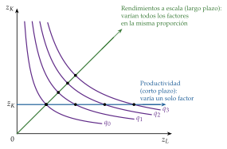
Fuente: elaboración propia.
Una misma tecnología puede tener rendimientos locales distintos según la escala. Es la ley de los rendimientos a escala variables (la regular ultra passum law de Frisch (1965), o rendimientos «wicksellianos», porque Wicksell ya propuso funciones con tramos sucesivos de rendimientos crecientes, constantes y decrecientes): crecientes cuando la empresa es pequeña (indivisibilidades, especialización), constantes en una escala intermedia y decrecientes cuando es grande (dificultades de dirección, factores no ampliables). Por ejemplo (Jehle y Reny, 2011, cap. 3): \[q=\frac{\kappa}{1+z_L^{-a}z_K^{-b}},\quad \kappa,a,b>0\qquad\Longrightarrow\qquad \varepsilon_{q,\lambda}(\vec{z})=(a+b)\left(1-\frac{q}{\kappa}\right), \tag{16}\] con rendimientos crecientes mientras \(q<\kappa\,(a+b-1)/(a+b)\) y decrecientes a partir de ese nivel (si \(a+b>1\)) (gráficos 17, panel b, y 18).16 La función no es homogénea, pero sí homotética: es la tecnología «en S» que está detrás de la curva de costes medios en forma de U [ver tema 3.A.12].
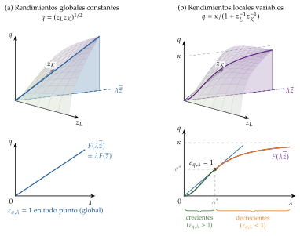
Fuente: elaboración propia a partir de Fuleky (2006) y Jehle y Reny (2011, cap. 3).
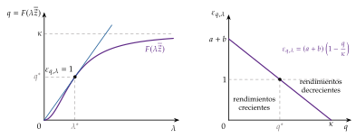
Fuente: elaboración propia a partir de Jehle y Reny (2011, cap. 3).
Consecuencias:
Las funciones homogéneas tienen rendimientos globales y locales iguales en todos los puntos; y, a la inversa, si la elasticidad de escala local es la misma en todo punto, la función es homogénea.
Las homotéticas, \(F(\vec{z})=g\big(h(\vec{z})\big)\), tienen \(\varepsilon_{q,\lambda}(\vec{z})=g'(h)\,h/g(h)\), que depende solo del nivel de producción: los rendimientos locales son iguales a lo largo de cada isocuanta, pero pueden cambiar de una isocuanta a otra.
Los rendimientos a escala no son las economías de escala, que son una propiedad de la función de costes. A lo largo de la senda de mínimo coste, la elasticidad de escala es el inverso de la elasticidad del coste respecto a la producción, \(\varepsilon_{q,\lambda}=\mathrm{CMe}/\mathrm{CMg}\) (coste medio entre coste marginal) (Hanoch, 1975): los rendimientos locales crecientes son la base técnica de las economías de escala [ver tema 3.A.12], y las dos nociones coinciden punto a punto cuando la tecnología es homotética.
Con rendimientos constantes la escala de cada empresa queda indeterminada: la tecnología solo fija las proporciones de los factores, y el tamaño lo deciden la demanda o la entrada [ver tema 3.A.16] [ver tema 3.A.43].
Evidencia: la industria típica de Estados Unidos (a 2 dígitos) muestra rendimientos a escala constantes o ligeramente decrecientes, y las estimaciones aumentan al agregar sectores (Basu y Fernald, 1997). Este resultado avala el supuesto habitual de rendimientos constantes en la función de producción agregada.
La tabla 3 resume la clasificación, a partir de la elasticidad de escala local: \[\varepsilon_{q,\lambda}(\vec{z})=\sum_i\varepsilon_{q,z_i}=\frac{\sum_i\mathrm{PMg}_i\,z_i}{F(\vec{z})}.\]
| Rendimientos | Globales (\(\lambda>1\), todo \(\vec{z}\)) | Locales | Homogénea de grado \(k\) (Cobb-Douglas) |
|---|---|---|---|
| Crecientes | \(F(\lambda\vec{z})>\lambda F(\vec{z})\) | \(\varepsilon_{q,\lambda}(\vec{z})>1\) | \(k>1\) (\(\alpha+\beta>1\)) |
| Constantes | \(F(\lambda\vec{z})=\lambda F(\vec{z})\) (\(\mathcal{Y}\) es un cono) |
\(\varepsilon_{q,\lambda}(\vec{z})=1\) | \(k=1\) (\(\alpha+\beta=1\)) |
| Decrecientes | \(F(\lambda\vec{z})<\lambda F(\vec{z})\) | \(\varepsilon_{q,\lambda}(\vec{z})<1\) | \(k<1\) (\(\alpha+\beta<1\)) |
| Variables | — | \(\varepsilon_{q,\lambda}(\vec{z})\gtrless 1\) según la escala | No homogénea (puede ser homotética) |
Fuente: elaboración propia a partir de Jehle y Reny (2011, cap. 3) y Mas-Colell, Whinston y Green (1995, párr. 5.B).
II.3. Muy largo plazo: progreso técnico
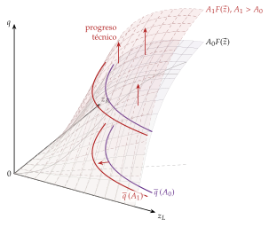
Fuente: elaboración propia a partir de Fuleky (2006).
Concepto de progreso técnico
Tras el corto y el largo plazo, con la tecnología dada, pasamos al muy largo plazo. En él la tecnología no es constante: hay progreso técnico, es decir, cambios en los métodos de producción (gráfico 19). Supone nuevos y mejores métodos o una mayor eficiencia de los existentes, y puede adoptar 2 formas:
innovaciones de proceso, que permiten producir más con las mismas cantidades de factores, o lo mismo con menos de alguno de ellos;
innovaciones de producto, que mejoran la calidad de los productos existentes o crean bienes nuevos.
Representación gráfica
El progreso técnico de proceso amplía el conjunto de posibilidades de producción: la función de producción se desplaza hacia arriba (con los mismos factores se produce más) y, por tanto, cada isocuanta se desplaza hacia el origen (la misma producción se obtiene con menos factores) (gráfico 20).
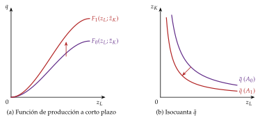
Fuente: elaboración propia.
Tipos de progreso técnico neutral
Clasificación: desde Hicks (1932), el progreso técnico se clasifica por su efecto sobre el reparto de la renta entre los factores:
es neutral si no altera una relación concreta entre las productividades marginales;
es sesgado (ahorrador de trabajo o de capital) si la altera.
Con \(A_t\) el nivel tecnológico y \(F\) homogénea de grado 1, los 3 tipos de neutralidad son: \[\text{Hicks: }q=A_t\,F(z_K,z_L);\qquad \text{Solow: }q=F(A_tz_K,z_L);\qquad \text{Harrod: }q=F(z_K,A_tz_L). \tag{17}\]
Neutral en sentido de Hicks (aumentador del producto): para una proporción \(z_K/z_L\) dada, la RMST no cambia. Aumenta la productividad de todos los factores en la misma proporción: las isocuantas se desplazan hacia el origen a lo largo de cada rayo sin cambiar de pendiente (gráfico 21, panel A). Si la RMST sube para un \(z_K/z_L\) dado (la productividad marginal del trabajo aumenta más que la del capital), el progreso es ahorrador de capital (utilizador de trabajo); si baja, es ahorrador de trabajo. Es el supuesto con el que suele medirse la productividad total de los factores [ver tema 3.A.45].
Neutral en sentido de Solow (aumentador del capital): el capital se mide en unidades de eficiencia, \(A_tz_K\), y, para una relación trabajo-producto \(z_L/q\) dada, las participaciones de los factores no cambian (panel B).
Neutral en sentido de Harrod (aumentador del trabajo): el trabajo se mide en unidades de eficiencia, \(A_tz_L\) (un trabajo que «aprende»), y, para una relación capital-producto \(z_K/q\) dada, las participaciones no cambian (panel C) (Harrod, 1948).
Relación entre las 3: no son una jerarquía, sino 3 criterios distintos, cada uno con una proporción constante diferente (\(z_K/z_L\), \(z_L/q\) y \(z_K/q\)). Con una Cobb-Douglas coinciden: \[A_t\,z_K^{\alpha}z_L^{\beta}=\big(A_t^{1/\alpha}z_K\big)^{\alpha}z_L^{\beta}=z_K^{\alpha}\big(A_t^{1/\beta}z_L\big)^{\beta}. \tag{18}\]
Teorema de Uzawa (1961): en un modelo de crecimiento con rendimientos constantes, una senda de crecimiento equilibrado, con producción y capital creciendo a tasas constantes, exige que el progreso técnico pueda representarse como aumentador del trabajo, es decir, neutral en sentido de Harrod (Acemoglu, 2009, cap. 2). Por eso el modelo de Solow lo supone [ver tema 3.A.43].
Aumentar un factor no es lo mismo que sesgar el progreso a su favor: si \(\sigma<1\), un progreso aumentador del capital eleva más la productividad marginal del trabajo que la del capital, es decir, está sesgado hacia el trabajo (Acemoglu, 2009, cap. 15). El sesgo del progreso técnico por sectores condiciona además el comercio y la relación real de intercambio [ver tema 3.B.9].
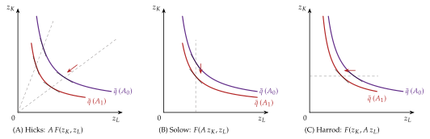
Fuente: elaboración propia a partir de Acemoglu (2009, cap. 2).
Recapitulando, cada plazo es un corte de la superficie de producción: a corto plazo, con un factor fijo, la ley de rendimientos decrecientes delimita la región económica y las etapas; a largo plazo, la elasticidad de escala, global o local, mide cómo responde la producción al tamaño, y a muy largo plazo el progreso técnico desplaza la tecnología, de forma neutral o sesgada. Hasta aquí la empresa ha obtenido un solo producto. ¿Qué cambia cuando obtiene varios con los mismos factores? Es el objeto del último bloque.
III. Empresa multiproducto: curva de contrato
Una vez estudiado cómo responde la producción de un solo bien en cada plazo, pasamos a la empresa que obtiene varios. Este último bloque responde a la última pregunta: qué cambia cuando con los mismos factores se obtienen varios productos. Su conclusión anticipada: con varios productos, estar sobre la isocuanta de cada uno ya no basta para la eficiencia: hay que asignar bien los factores entre los productos, en la curva de contrato, y la frontera de lo posible pasa a describirse con una función de transformación, cuya pendiente, la relación marginal de transformación, es el coste de oportunidad de un producto en términos del otro.
En el cante: la caja de Edgeworth, que se forma girando el mapa de isocuantas de un bien (gráfico 22), con la curva de contrato y la FPP en un solo gráfico (gráfico 23), sin repetir el desarrollo del equilibrio general (unos 2′30″); después, la función de transformación y la curva de transformación de la empresa con su RMT (gráfico 24), la producción conjunta en proporciones fijas y variables y las economías de alcance (unos 2′). El recuadro sobre la competencia perfecta se dice en una frase. Si falta tiempo, III.2 se reduce a \(T(\vec{y})\leq 0\), la RMT y las economías de alcance en una frase.
III.1. La caja de Edgeworth: curva de contrato y frontera de posibilidades de producción
a) Idea
Hasta ahora la empresa obtenía un solo producto y era eficiente con estar sobre la isocuanta de cada nivel de producción. Muchas empresas, y la economía en su conjunto, obtienen varios productos con unos mismos factores. El caso más sencillo es el de productos que se obtienen con procesos separables (una planta para cada uno, o empresas distintas de una economía): la frontera de lo posible se obtiene asignando los factores disponibles entre los productos. Es la construcción del equilibrio general [ver tema 3.A.21], que aquí se resume.
b) Modelo
i) Supuestos
Dos bienes, \(X\) e \(Y\), se producen con trabajo y capital, cuyas dotaciones totales son fijas. Con la notación del equilibrio general, \(L_X\) y \(K_X\) son el trabajo y el capital empleados en producir \(X\): \[X=F_X(L_X,K_X),\qquad Y=F_Y(L_Y,K_Y),\qquad L_X+L_Y=\overline{L},\qquad K_X+K_Y=\overline{K}. \tag{19}\]
ii) Desarrollo
La caja de Edgeworth de la producción se forma girando 180° el mapa de isocuantas de \(Y\) y superponiéndolo al de \(X\), de modo que los ejes cierren un rectángulo de lados \(\overline{L}\) y \(\overline{K}\) (gráfico 22). Cada punto de la caja es un reparto de los factores; las isocuantas de \(X\) se miden desde el origen \(O_X\) y las de \(Y\), desde \(O_Y\) (gráfico 23).
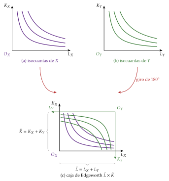
Fuente: elaboración propia.
Estar sobre la isocuanta de cada producto ya no garantiza la eficiencia. En un punto \(A\) donde las isocuantas se cortan, se emplean todos los factores en producir \(X_1\) e \(Y_1\), pero reasignándolos se puede obtener más \(X\) con la misma \(Y\) (punto \(B\)) o más \(Y\) con la misma \(X\) (punto \(C\)): en \(A\) las RMST de los dos productos son distintas.
La asignación es técnicamente eficiente (eficiente en sentido de Pareto en la producción) cuando no puede producirse más de un bien sin producir menos del otro, es decir, cuando las isocuantas son tangentes: \[\mathrm{RMST}^X_{LK}=\frac{\mathrm{PMg}^X_L}{\mathrm{PMg}^X_K}=\frac{\mathrm{PMg}^Y_L}{\mathrm{PMg}^Y_K}=\mathrm{RMST}^Y_{LK}. \tag{20}\] El lugar geométrico de esas tangencias es la curva de contrato de la producción [ver tema 3.A.22].
Llevando cada punto de la curva de contrato al plano de los productos se obtiene la frontera de posibilidades de producción (FPP): las combinaciones de bienes técnicamente eficientes. Es decreciente, porque para producir más de un bien hay que producir menos del otro,17 y el progreso técnico y el aumento de las dotaciones la desplazan hacia fuera.
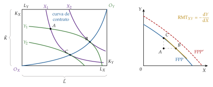
Fuente: elaboración propia.
iii) Implicaciones
La pendiente de la FPP es la relación marginal de transformación de la economía, el coste de oportunidad de una unidad más de \(X\): \[\mathrm{RMT}_{XY}\equiv-\frac{dY}{dX}=\frac{\mathrm{PMg}^Y_L}{\mathrm{PMg}^X_L}=\frac{\mathrm{PMg}^Y_K}{\mathrm{PMg}^X_K}=\frac{\mathrm{CMg}_X}{\mathrm{CMg}_Y}. \tag{21}\] RMST y RMT son conceptos análogos: las dos son pendientes de una frontera técnica. La RMST es la pendiente de la isocuanta (2 factores, un producto) y la RMT, la de la frontera de transformación (2 productos, factores dados).
c) Extensiones
Optimalidad en la producción con competencia perfecta [ver tema 3.A.22]. Cada productor maximiza su beneficio con precios dados: \[\begin{array}{rl}\displaystyle \max_{L_j,K_j} & \displaystyle B_j=p_j\,F_j(L_j,K_j)-w_LL_j-w_KK_j\end{array}\quad (j=X,Y)\qquad\Longrightarrow\qquad p_j\,\mathrm{PMg}^j_L=w_L,\quad p_j\,\mathrm{PMg}^j_K=w_K.\] Dividiendo, \(\mathrm{RMST}^X_{LK}=\mathrm{RMST}^Y_{LK}=w_L/w_K\). Como en competencia perfecta todos los productores pagan los mismos precios por los factores, sus RMST se igualan y la asignación está en la curva de contrato: no hay reasignación de factores que aumente la producción de un bien sin reducir la del otro. Además, \(\mathrm{RMT}_{XY}=\mathrm{CMg}_X/\mathrm{CMg}_Y=p_X/p_Y\) [ver tema 3.A.21].
d) Valoración
La caja supone procesos separables: cada factor produce un solo bien. No recoge los casos en que un mismo proceso da varios productos ni las ventajas de producirlos juntos, que son los de la empresa multiproducto.
III.2. La empresa multiproducto y la producción conjunta
a) Idea
Una vez vista la asignación de factores entre procesos separables, pasamos a los procesos que dan varios productos a la vez. Muchas empresas obtienen varios productos con los mismos factores: es la empresa multiproducto. El conjunto de posibilidades de producción del apartado I.1 la admite sin cambios, porque basta con que más de un componente del vector netput sea positivo; lo que ya no sirve es la función de producción.
b) Modelo
i) Supuestos
La frontera de \(\mathcal{Y}\) se describe con la función de transformación \(T(\vec{y})\) (Mas-Colell, Whinston y Green, 1995, párr. 5.B): \[\mathcal{Y}=\{\vec{y}\in\mathbb{R}^S:\ T(\vec{y})\leq 0\},\qquad T(\vec{y})=0\ \text{en los planes eficientes}. \tag{22}\] La función de producción es el caso de un solo producto: \(T(q,-\vec{z})=q-F(\vec{z})\).
ii) Desarrollo
Con 2 productos y un vector de factores dado, la frontera es la curva de transformación de la empresa, \(T(q_1,q_2,-\overline{\vec{z}})=0\), y su pendiente, la relación marginal de transformación (gráfico 24): \[\mathrm{RMT}_{12}\equiv-\left.\frac{dq_2}{dq_1}\right|_{T=0}=\frac{\partial T/\partial q_1}{\partial T/\partial q_2}, \tag{23}\] lo que hay que dejar de producir del bien 2 para obtener una unidad más del bien 1 con los mismos factores. Es la misma idea que la RMT de la economía (21), aplicada a una sola empresa. Si \(\mathcal{Y}\) es convexo, la curva es cóncava respecto al origen y la RMT crece al especializarse; al aumentar los factores o con progreso técnico, se desplaza hacia fuera.
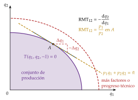
Fuente: elaboración propia a partir de Mas-Colell, Whinston y Green (1995, párr. 5.B).
iii) Implicaciones
Hay producción conjunta en sentido estricto cuando un mismo proceso da varios productos a la vez. Dos casos:
proporciones fijas: los productos salen en una proporción técnica dada, como la carne y el cuero, el trigo y la paja o el algodón y el aceite de semilla de algodón, ejemplos de oferta conjunta de Marshall (1890, lib. V, cap. VI). La curva de transformación se reduce a un punto (o a un ángulo recto) para cada nivel de factores, y no hay forma técnica de imputar el coste a cada producto por separado;
proporciones variables: la empresa puede cambiar la mezcla, como en el refino del petróleo o en la ganadería de lana o de carne, y elige un punto de una curva de transformación decreciente.
Con precios dados, la empresa elige el punto de su frontera en el que la RMT iguala el precio relativo de los productos, \(\mathrm{RMT}_{12}=p_1/p_2\): la recta de isobeneficio es tangente a la curva de transformación (anexo B).
c) Extensiones
Producir varios bienes juntos es ventajoso cuando hay factores compartidos (instalaciones, marca, conocimiento) que, una vez adquiridos para un producto, sirven también para otro. Es la base técnica de las economías de alcance (Panzar y Willig, 1981): \(C(q_1,q_2)<C(q_1,0)+C(0,q_2)\). Junto con las economías de escala, explican la subaditividad de los costes y el monopolio natural multiproducto [ver tema 3.A.12] [ver tema 3.A.17], y condicionan los límites de la empresa [ver tema 3.A.15].
d) Valoración
La función de transformación generaliza la función de producción a cualquier número de productos, pero, como ella, solo dice qué es posible: qué productos y en qué proporciones elige la empresa depende de los precios.
Recapitulando, con varios productos la eficiencia exige asignar bien los factores entre ellos, en la curva de contrato, y la frontera de lo posible es una función de transformación cuya pendiente, la RMT, es el coste de oportunidad de cada producto. Con la tecnología caracterizada, el paso siguiente es introducir los precios: la empresa elige, entre los planes técnicamente eficientes, el que maximiza su beneficio. De ahí salen su función de beneficio, su oferta y sus demandas de factores, que se estudian con la dualidad [ver tema 3.A.12]; como la empresa no tiene restricción presupuestaria, su oferta no tiene efecto renta y la oferta de mercado es la suma de las individuales (anexo B).
Conclusión
Recapitulación (ideas clave):
En conclusión, hemos caracterizado la tecnología de la empresa en 3 pasos. Primero, con unos pocos axiomas sobre el conjunto de posibilidades de producción, la hemos representado con una función de producción cuyas isocuantas, con la RMST y la elasticidad de sustitución, miden cuánto se pueden sustituir los factores; la Cobb-Douglas, la CES y la de Leontief son sus formas de referencia.
Segundo, siguiendo los plazos de Marshall, a corto plazo manda la ley de rendimientos decrecientes; a largo plazo, los rendimientos a escala, que pueden ser globales o cambiar con la escala (locales), y a muy largo plazo, el progreso técnico, cuya neutralidad depende de qué proporción se mantenga constante.
Y tercero, con varios productos, la eficiencia exige además asignar bien los factores entre productos: igualar las RMST en la curva de contrato y situarse en la frontera de posibilidades de producción, que para una empresa es su función de transformación.
Relevancia: la forma que se suponga a la tecnología decide resultados en otras partes de la teoría.
Con rendimientos constantes y remuneración según la productividad marginal, el producto se agota y las participaciones de los factores dependen de \(\sigma\). Si la función agregada fuese una Cobb-Douglas con competencia perfecta, el exponente del trabajo coincidiría con su participación en la renta: en España, la remuneración de los asalariados fue el 48,4 % del PIB en 2025 (Eurostat, 2026), y el 56,6 % si se imputa un salario a los autónomos (Comisión Europea, 2026); pero la caída de esta participación en casi todos los países desde los años 80 (Karabarbounis y Neiman, 2014) es difícil de explicar con \(\sigma=1\) [ver tema 3.A.45].
La neutralidad de Harrod sostiene el crecimiento equilibrado [ver tema 3.A.43], y los rendimientos crecientes abren el crecimiento endógeno [ver tema 3.A.44] y la nueva teoría del comercio [ver tema 3.B.6].
Extensiones y relación con otras partes del temario:
La teoría de la producción es solo la restricción técnica. Con los precios de los factores se obtiene la función de costes y, por dualidad, puede recuperarse la tecnología a partir de ella [ver tema 3.A.12]; con la estructura de mercado, la oferta [ver tema 3.A.16-3.A.19]. El problema del productor que maximiza el beneficio se resume en el anexo B.
Cuando las empresas no producen en la curva de contrato, el bienestar es menor que el posible [ver tema 3.A.22].
La función de producción agregada homogénea de grado 1 es la base de la teoría neoclásica de la distribución, y la agregación del capital fue el centro de la controversia de los dos Cambridge (anexo F) [ver tema 3.A.4].
Los rendimientos crecientes y la forma de definir el capital (físico, humano, conocimiento) están en el origen del crecimiento endógeno [ver tema 3.A.44], y las diferencias de tecnología, en la teoría del comercio internacional [ver tema 3.B.5] [ver tema 3.B.6].
Opinión: la función de producción neoclásica es una idealización poderosa que trata a la empresa como una caja negra que transforma factores en productos, y permite obtener muchas conclusiones sobre su comportamiento. Lo que ocurre dentro de la caja (contratos, incentivos, límites de la empresa) es objeto de la teoría de la organización industrial [ver tema 3.A.15].
Idea final: ¿puede, entonces, una sola función resumir lo que una empresa sabe hacer? Resume lo que puede producir, no lo que producirá ni cómo se organiza por dentro: es el mapa de lo técnicamente posible sobre el que los precios, los costes y los mercados trazarán después la elección.
A. Anexo: derivaciones
Este anexo no se canta: desarrolla las derivaciones de los apartados I y II por si las pide el tribunal.
A.1. La CES y sus límites
Sea \(q=A\left[a_Kz_K^{\rho}+a_Lz_L^{\rho}\right]^{1/\rho}\), con \(a_K+a_L=1\) y \(\rho\equiv(\sigma-1)/\sigma\).
Elasticidad de sustitución. \(\mathrm{PMg}_K=A^{\rho}a_K\,(q/z_K)^{1-\rho}\) y \(\mathrm{PMg}_L=A^{\rho}a_L\,(q/z_L)^{1-\rho}\), luego \(\mathrm{RMST}_{LK}=\dfrac{a_L}{a_K}\left(\dfrac{z_K}{z_L}\right)^{1-\rho}\) y \(\sigma=\dfrac{d\ln(z_K/z_L)}{d\ln \mathrm{RMST}_{LK}}=\dfrac{1}{1-\rho}\).
Límite \(\rho\to 0\) (\(\sigma\to 1\)). \(\ln(q/A)=\dfrac{\ln\left(a_Kz_K^{\rho}+a_Lz_L^{\rho}\right)}{\rho}\) es de la forma \(0/0\) en \(\rho=0\) (porque \(a_K+a_L=1\)). Por la regla de L’Hôpital, \[\lim_{\rho\to 0}\ln\frac{q}{A}=\lim_{\rho\to 0}\frac{a_Kz_K^{\rho}\ln z_K+a_Lz_L^{\rho}\ln z_L}{a_Kz_K^{\rho}+a_Lz_L^{\rho}}=a_K\ln z_K+a_L\ln z_L,\] es decir, \(q\to A\,z_K^{a_K}z_L^{a_L}\): una Cobb-Douglas con rendimientos constantes.
Límite \(\rho\to-\infty\) (\(\sigma\to 0\)). Si \(z_K<z_L\), \(\left[a_Kz_K^{\rho}+a_Lz_L^{\rho}\right]^{1/\rho}=z_K\left[a_K+a_L(z_L/z_K)^{\rho}\right]^{1/\rho}\to z_K\), porque \((z_L/z_K)^{\rho}\to 0\) y \(a_K^{1/\rho}\to 1\). En general, \(q\to A\min\{z_K,z_L\}\): Leontief.
Límite \(\rho\to 1\) (\(\sigma\to\infty\)): \(q=A(a_Kz_K+a_Lz_L)\), sustitutivos perfectos.∎
Fuente: elaboración propia a partir de Arrow et al. (1961) y Varian (1992, cap. 1).
A.2. Funciones homogéneas: teorema de Euler y productividades marginales
Teorema de Euler: si \(F(\lambda\vec{z})=\lambda^kF(\vec{z})\) para todo \(\lambda>0\), derivando respecto a \(\lambda\): \(\sum_i\mathrm{PMg}_i(\lambda\vec{z})\,z_i=k\,\lambda^{k-1}F(\vec{z})\). En \(\lambda=1\), \(\sum_i\mathrm{PMg}_i(\vec{z})\,z_i=k\,F(\vec{z})\). Con \(k=1\), pagar a cada factor su productividad marginal agota el producto.∎
Productividades marginales: derivando \(F(\lambda\vec{z})=\lambda^kF(\vec{z})\) respecto a \(z_i\): \(\lambda\,\mathrm{PMg}_i(\lambda\vec{z})=\lambda^k\,\mathrm{PMg}_i(\vec{z})\), es decir, \(\mathrm{PMg}_i(\lambda\vec{z})=\lambda^{k-1}\mathrm{PMg}_i(\vec{z})\): las productividades marginales son homogéneas de grado \(k-1\). Por tanto, la RMST es constante a lo largo de cada rayo: \(\mathrm{RMST}_{LK}(\lambda\vec{z})=\mathrm{RMST}_{LK}(\vec{z})\).∎
Elasticidad de escala local: \[\left.\frac{d\ln F(\lambda\vec{z})}{d\ln\lambda}\right|_{\lambda=1}=\frac{\sum_i\mathrm{PMg}_i\,z_i}{F(\vec{z})}=\sum_i\varepsilon_{q,z_i};\] con una homogénea de grado \(k\), vale \(k\) en todo punto.∎
Etapas con rendimientos constantes: con \(k=1\), \(q=\mathrm{PMg}_L\,z_L+\mathrm{PMg}_K\,z_K\), y dividiendo por \(z_L\), \(\mathrm{PMe}_L=\mathrm{PMg}_L+\mathrm{PMg}_K\,(z_K/z_L)\). Por tanto, \(\mathrm{PMg}_L>\mathrm{PMe}_L\) (etapa I) si y solo si \(\mathrm{PMg}_K<0\).∎
A.3. La Cobb-Douglas: elasticidad de sustitución unitaria
Con \(q=A\,z_K^{\alpha}z_L^{\beta}\): \(\mathrm{PMg}_K=\alpha q/z_K\) y \(\mathrm{PMg}_L=\beta q/z_L\), luego \(\mathrm{RMST}_{LK}=\dfrac{\beta}{\alpha}\dfrac{z_K}{z_L}\), \(\ln(z_K/z_L)=\ln \mathrm{RMST}_{LK}+\ln(\alpha/\beta)\) y \(\sigma=1\). Los 3 tipos de progreso técnico neutral coinciden: \(A_t\,z_K^{\alpha}z_L^{\beta}=\big(A_t^{1/\alpha}z_K\big)^{\alpha}z_L^{\beta}=z_K^{\alpha}\big(A_t^{1/\beta}z_L\big)^{\beta}\).∎
B. Anexo: del conjunto de producción al problema del productor
Este anexo no se canta. El problema del productor es el punto de partida de la teoría de los costes [ver tema 3.A.12]; aquí se resume lo que enlaza con la tecnología.
Problema: con precios dados de los bienes \(\vec{p}\in\mathbb{R}^S_{++}\), la empresa elige el plan que maximiza el beneficio (Mas-Colell, Whinston y Green, 1995, párr. 5.C): \[B(\vec{p})=\begin{array}{rl}\displaystyle \max_{\vec{y}} & \displaystyle \vec{p}\cdot\vec{y} \\ \text{s.a.} & \vec{y}\in\mathcal{Y}\quad(T(\vec{y})\leq 0)\end{array}\] Con un producto y varios factores, \[B(p,\vec{w})=\begin{array}{rl}\displaystyle \max_{\vec{z}} & \displaystyle p\,F(\vec{z})-\vec{w}\cdot\vec{z} \\ \text{s.a.} & \vec{z}\geq\vec{0}\end{array}\] Condiciones de primer orden (solución interior): \(p\,\mathrm{PMg}_i=w_i\) para cada factor, es decir, el valor del producto marginal iguala el precio del factor. Dividiendo, \(\mathrm{RMST}_{LK}=w_L/w_K\). Con varios productos, \(\mathrm{RMT}_{12}=p_1/p_2\).
Condiciones de segundo orden: la matriz hessiana de \(F\) debe ser semidefinida negativa en el óptimo. Si \(F\) es estrictamente cóncava, se cumplen y la solución es única; con rendimientos constantes o crecientes el problema puede no estar acotado, como se explica en el recuadro «Concavidad, cuasiconcavidad y maximización del beneficio» del apartado I.2.
Función de beneficio \(B(p,\vec{w})\): no decreciente en \(p\) (estrictamente creciente si \(q(p,\vec{w})>0\)) y no creciente en \(\vec{w}\), homogénea de grado uno, convexa y continua en precios. Por el lema de Hotelling, \(\partial B/\partial p=q(p,\vec{w})\) (oferta) y \(\partial B/\partial w_i=-z_i(p,\vec{w})\) (demandas de factores).
Oferta y demandas de factores: \(q(p,\vec{w})\) y \(\vec{z}(p,\vec{w})\) son homogéneas de grado cero en \((p,\vec{w})\). Por la convexidad de \(B\), la matriz de sus derivadas respecto a los precios es simétrica y semidefinida positiva: \(\partial q/\partial p\geq 0\) (ley de la oferta) y \(\partial z_i/\partial w_i\leq 0\). No hay efecto renta, porque la empresa no tiene restricción presupuestaria: la ley de la oferta se cumple siempre, a diferencia de la ley de la demanda [ver tema 3.A.8].
Agregación: por la misma razón, la oferta de mercado es la suma de las ofertas individuales. Con \(J\) empresas de conjuntos \(\mathcal{Y}_1,\dots,\mathcal{Y}_J\), el conjunto de producción agregado es \(\mathcal{Y}=\mathcal{Y}_1+\dots+\mathcal{Y}_J=\{\vec{y}:\ \vec{y}=\sum_j\vec{y}_j,\ \vec{y}_j\in\mathcal{Y}_j\}\), y el beneficio máximo de una única empresa que operase \(\mathcal{Y}\) es la suma de los beneficios máximos individuales (Mas-Colell, Whinston y Green, 1995, prop. 5.E.1). La agregación de la producción es sencilla y poderosa, frente a la de la demanda.
Resolución en 2 etapas: el problema puede resolverse en 2 etapas: minimizar el coste de cada nivel de producción y elegir después el nivel que maximiza el beneficio, \(p=\mathrm{CMg}(q)\). Es el enfoque de los costes [ver tema 3.A.12] y de la competencia perfecta [ver tema 3.A.16]; con rendimientos constantes, el tamaño de cada empresa queda indeterminado y la oferta de largo plazo de la industria es horizontal.
C. Anexo: formas funcionales de la función de producción
| Forma | Expresión | \(\boldsymbol{\sigma}\) | Rendimientos y uso |
|---|---|---|---|
| Lineal (sustitutivos perfectos) | \(q=a_Kz_K+a_Lz_L\) | \(\infty\) | Constantes; factores intercambiables |
| Coeficientes fijos (Leontief) | \(q=\min\{z_K/a;\,z_L/b\}\) | \(0\) | Constantes; tablas input-output [ver tema 3.A.31] |
| Cobb-Douglas | \(q=A\,z_K^{\alpha}z_L^{\beta}\) | \(1\) | Grado \(\alpha+\beta\); crecimiento, distribución |
| CES | \(q=A[a_Kz_K^{\rho}+a_Lz_L^{\rho}]^{\nu/\rho}\) | \(1/(1-\rho)\) | Grado \(\nu\); estimación de \(\sigma\) |
| Translog | \(\ln q=\alpha_0+\sum_i\alpha_i\ln z_i+\tfrac12\sum_i\sum_j\beta_{ij}\ln z_i\ln z_j\) | variable | Variables; forma flexible para estimar |
| Leontief generalizada | \(q=\sum_i\sum_j\beta_{ij}\,z_i^{1/2}z_j^{1/2}\) | variable | Constantes; forma flexible |
Fuente: elaboración propia a partir de Arrow et al. (1961), Christensen, Jorgenson y Lau (1973) y Diewert (1971).
Las formas flexibles (translog y Leontief generalizada) son aproximaciones de segundo orden a cualquier tecnología: no imponen a priori el valor de \(\sigma\) ni los rendimientos, por lo que se usan para estimar tecnologías y funciones de costes con muchos factores (por ejemplo, la sustitución entre capital, trabajo, energía y materiales) [ver tema 3.A.12].18
Todas, salvo la translog en general, son homotéticas; la Cobb-Douglas, la CES, la lineal, la de Leontief y la Leontief generalizada son, además, homogéneas. Un ejemplo de función homotética no homogénea es la del apartado II.2, \(q=\kappa/(1+z_L^{-a}z_K^{-b})\).
Las formas que se usan como funciones de utilidad (forma polar de Gorman, cuasilineal, Stone-Geary) tienen sus análogas en la producción [ver tema 3.A.8].
D. Anexo: la elasticidad de sustitución con más de 2 factores
Con \(n>2\) factores, la definición de Hicks admite varias generalizaciones, según qué se mantenga constante (Blackorby y Russell, 1989). Con la función de costes \(C(\vec{w},q)\), sus derivadas \(C_i=\partial C/\partial w_i=z_i\) (lema de Shephard) y \(C_{ij}=\partial^2C/\partial w_i\partial w_j\) [ver tema 3.A.12]:
Elasticidad de Allen-Uzawa: \(\sigma^{AU}_{ij}=\dfrac{C\,C_{ij}}{C_i\,C_j}=\dfrac{\varepsilon_{z_i,w_j}}{s_j}\), con \(s_j\) la participación del factor \(j\) en el coste (Allen, 1938; Uzawa, 1962). Es simétrica, pero solo informa del signo (sustitutivos si es positiva, complementarios si es negativa), no de la curvatura.
Elasticidad de Morishima: \(M_{ij}=\varepsilon_{z_i,w_j}-\varepsilon_{z_j,w_j}\), la variación porcentual de \(z_i/z_j\) cuando cambia el precio \(w_j\). Es la generalización natural de la de Hicks: mide la curvatura de las isocuantas y determina cómo cambian las participaciones relativas. En general no es simétrica.
Con 2 factores, las 3 medidas coinciden con la \(\sigma\) del apartado I.3.
E. Anexo: producción con incertidumbre
Gravelle y Rees (2004) distinguen 2 fuentes de incertidumbre en la empresa:
tecnológica: la producción que se obtiene con unos factores es aleatoria (cosechas, averías), \(q=F(\vec{z},\tilde{\theta})\);
de mercado: la empresa no conoce con certeza los precios del producto o de los factores cuando decide.
La empresa suele suponerse neutral al riesgo (maximiza el beneficio esperado), porque sus propietarios pueden diversificar. Si es aversa al riesgo, Sandmo (1971) demuestra que, con incertidumbre en el precio del producto, produce menos que con un precio cierto igual al esperado [ver tema 3.A.10].
Ante una demanda incierta conviene una tecnología flexible: una planta cuyo coste medio aumente poco al alejarse de la producción óptima, aunque sea algo más cara en ese punto (Stigler, 1939).
F. Anexo: la función de producción agregada y la controversia del capital
F.1. La función de producción agregada en forma intensiva
Forma intensiva: en macroeconomía se postula una función agregada \(Y=F(K,L)\) con productividades marginales positivas y decrecientes y rendimientos constantes a escala. Con \(\lambda=1/L\), \(Y/L=F(K/L,1)\): en términos por trabajador, \(y=f(k)\), con \(y\equiv Y/L\), \(k\equiv K/L\), \(f'>0\) y \(f''<0\) [ver tema 3.A.43].
Distribución: si cada factor cobra su productividad marginal, \(r=\partial Y/\partial K=f'(k)\) y \(w=\partial Y/\partial L=f(k)-k\,f'(k)\), y por el teorema de Euler \(Y=rK+wL\): el producto se agota (teoría de la distribución según la productividad marginal de Wicksteed y J. B. Clark).
Gráficamente (gráfico 25): la tangente a \(f(k)\) en \(k^*\) tiene pendiente \(r=f'(k^*)\); corta el eje vertical a la altura \(f(k^*)-k^*f'(k^*)=w\) (salario por trabajador), la distancia entre ese corte y \(f(k^*)\) es \(rk^*\) (renta del capital por trabajador) y corta el eje horizontal en \(-w/r\): el salario relativo se lee como una distancia.
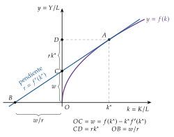
Fuente: elaboración propia a partir de Solow (1956).
F.2. La controversia de los dos Cambridge
Entre los años 50 y 70, los economistas de Cambridge (Inglaterra), con Joan Robinson, Sraffa y Pasinetti, discuten con los de Cambridge (Massachusetts), con Samuelson y Solow, la validez de la función de producción agregada (Cohen y Harcourt, 2003).
El punto de partida es Robinson (1953): el trabajo puede agregarse en horas, pero el capital es un conjunto de bienes heterogéneos que solo puede sumarse en valor. Ese valor depende del tipo de interés, que es justo lo que la teoría quiere explicar con la productividad marginal del capital: el razonamiento es circular.
Sraffa (1960) y los modelos con varias técnicas muestran el retorno de técnicas (reswitching): una técnica puede ser la más rentable con tipos de interés bajos, dejar de serlo con tipos intermedios y volver a serlo con tipos altos; y el capital por trabajador no tiene por qué disminuir al subir el tipo de interés (capital reversing). Falla entonces la relación decreciente entre capital y tipo de interés de la «parábola» neoclásica.
Levhari (1965) intentó demostrar que el retorno de técnicas no podía darse en la economía en su conjunto; Pasinetti (1966) y otros mostraron que la demostración era errónea, y Samuelson (1966) lo admitió: la parábola simple del capital no es válida en general.
En consecuencia, la función agregada no puede derivarse en general de las tecnologías individuales, y la distribución de la renta no puede explicarse solo por las productividades marginales agregadas. Pese a ello, la función agregada sigue siendo la herramienta central de la macroeconomía (crecimiento, contabilidad del crecimiento, productividad total de los factores) [ver tema 3.A.45], porque es manejable y empíricamente útil, y la teoría reciente estudia en qué condiciones puede fundamentarse desde la microeconomía (Baqaee y Farhi, 2019). La controversia enfrentó a los postkeynesianos con la síntesis neoclásica [ver tema 3.A.4]; para una exposición divulgativa, Feás (2017).
G. Anexo: aspectos para el test
Preguntas tipo test del primer ejercicio: simulador de test.
Rendimientos a escala frente a economías de escala: los primeros son una propiedad de la tecnología (\(F(\lambda\vec{z})\) frente a \(\lambda F(\vec{z})\)); las segundas, de la función de costes (\(\mathrm{CMe}\) decreciente). Solo coinciden punto a punto con tecnologías homotéticas (\(\varepsilon_{q,\lambda}=\mathrm{CMe}/\mathrm{CMg}\)).
Productividad frente a rendimientos: la productividad varía un factor (corto plazo); los rendimientos, todos en la misma proporción (largo plazo). Puede haber productividad marginal decreciente de cada factor y rendimientos constantes o crecientes a escala (Cobb-Douglas con \(\alpha,\beta<1\) y \(\alpha+\beta\geq 1\)).
Elasticidad de sustitución: \(\sigma=0\) Leontief, \(\sigma=1\) Cobb-Douglas, \(\sigma=\infty\) lineal; en la CES, \(\sigma=1/(1-\rho)\). Leontief y Cobb-Douglas son límites de la CES. La introducen Hicks (1932) y Robinson (1933); la CES, Arrow, Chenery, Minhas y Solow (1961).
Neutralidad frente a sesgo: Hicks mantiene la RMST para \(z_K/z_L\) dado; Harrod (aumentador del trabajo), las participaciones para \(z_K/q\) dado; Solow (aumentador del capital), para \(z_L/q\) dado. En la Cobb-Douglas coinciden. Con \(\sigma<1\), el progreso aumentador del capital está sesgado hacia el trabajo.
Etapas: etapa I hasta el máximo de \(\mathrm{PMe}_L\) (margen extensivo, \(\varepsilon_{q,z_L}=1\)); etapa II hasta \(\mathrm{PMg}_L=0\) (margen intensivo, máximo del producto total); la empresa racional produce en la etapa II. El análisis por etapas es de Cassels (1936), no de Cassel (1918), que usaba coeficientes fijos.
Isocuantas: no se cortan porque \(F\) es una función; son convexas si \(F\) es cuasicóncava; la cuasiconcavidad no implica rendimientos no crecientes, la concavidad sí. Las isoclinas unen puntos de igual RMST: rectas por el origen si la función es homotética.
Bibliografía
El individualismo metodológico, muy extendido en las ciencias sociales, sostiene que todos los fenómenos sociales (su estructura y sus cambios) pueden explicarse, en principio, a partir de los individuos: sus metas, sus creencias y sus acciones. La evolución de la sociedad se entiende así como el agregado de las decisiones de los particulares. Es, por tanto, un reduccionismo: explica las entidades grandes (un mercado, una economía) por referencia a las pequeñas (el consumidor, la empresa).↩︎
La microeconomía contemporánea considera esta separación estricta entre consumidores y productores una simplificación excesiva (Ekelund y Hébert, 2014). Lo muestran las «tecnologías del consumo», que aplican la teoría de la producción a las decisiones de consumo: el enfoque de características de Lancaster (1966), la producción doméstica de Becker (1965) y de Gronau (1977) o la economía de la información de Stigler (1961). Aquí el productor es la empresa, pero la misma tecnología formal describe la producción doméstica [ver tema 3.A.8]. Además, la microeconomía estudia otros agentes, como las instituciones financieras o el Estado.↩︎
La inconsistencia que señala Sraffa está entre la teoría marshalliana de la competencia perfecta, que prevé que en el equilibrio de largo plazo se agoten las economías de escala, y la evidencia empírica, según la cual muchas industrias no las agotaban. Si las economías de escala son internas a la empresa, la mayor acabaría quedándose con el mercado y la competencia no se sostendría; si son externas, rara vez se limitan a una sola industria, como exige el equilibrio parcial. De ahí su propuesta de abandonar la competencia perfecta y estudiar cada empresa con su propio mercado y una demanda decreciente.↩︎
Si hay costes hundidos (decisiones de producción ya tomadas o contratos firmados), la inacción no es posible: es una propiedad del largo plazo. El conjunto de corto plazo, con un factor fijo, no la cumple (apartado II.1).↩︎
Pueden distinguirse así 2 categorías de axiomas. Los necesarios (no vacío, cerrado, eliminación gratuita e imposibilidad de producción gratuita) garantizan que la tecnología pueda representarse con una función de producción. Los deseables (posibilidad de inacción y convexidad) dan una tecnología de buen comportamiento y, con ella, una función neoclásica de buen comportamiento; son los que se suponen para el equilibrio competitivo. La convexidad se incluye por comodidad analítica: con la inacción implica la divisibilidad de escala y rendimientos no crecientes (los procesos promediados rinden al menos tanto como los extremos), y con un solo producto equivale a que la función de producción sea cóncava, la condición que hace falta para maximizar el beneficio (apartado I.2).↩︎
Es un supuesto instrumental, no una propiedad que se siga de los axiomas: exige que los factores sean continuamente sustituibles entre sí, que haya una infinidad de técnicas y que el bien que se produce sea perfectamente divisible.↩︎
Como la convexidad estricta de las preferencias [ver tema 3.A.8], la cuasiconcavidad estricta recoge la idea de que una mezcla de dos combinaciones extremas de factores (mucho capital y poco trabajo, o al revés) que producen lo mismo produce estrictamente más. Es distinta de la complementariedad en sentido de Edgeworth, \(\partial^2F/\partial z_L\partial z_K>0\): que la productividad marginal de un factor aumente con la cantidad del otro. En la Cobb-Douglas \(q=A\,z_K^{\alpha}z_L^{\beta}\) se cumplen las dos: \(\partial \mathrm{PMg}_L/\partial z_K=\alpha\beta\,q/(z_Lz_K)>0\), de modo que los trabajadores son más productivos cuanto más capital tienen; pero la productividad marginal del capital disminuye con el propio capital si \(\alpha<1\).↩︎
La RMST se define en valor absoluto, con el signo menos, para que sea positiva: por la eliminación gratuita la función de producción es no decreciente en los factores, y la pendiente de la isocuanta es negativa (o nula). Algunos manuales la definen como la propia pendiente, con signo negativo; el contenido es el mismo.↩︎
Solow (1956) ya usa una función de este tipo como ejemplo en su modelo de crecimiento [ver tema 3.A.43], pero la formalización general y su estimación son de Arrow et al. (1961) (Klump y Preissler, 2000).↩︎
Es la ley de los rendimientos marginales decrecientes, así llamada porque la producción se mide en unidades físicas, o ley de las proporciones variables, porque la proporción entre el factor fijo y el variable cambia a lo largo de la función. Exige que haya algún factor fijo. La enuncia Turgot (1767), en una respuesta teórica a una memoria fisiócrata sobre la agricultura francesa: pasado cierto punto, los productos siguen aumentando, pero cada vez menos. La recogen en 1815, en el debate sobre las leyes de granos y para explicar la renta de la tierra, West, Malthus, Ricardo y Torrens, con la tierra como factor fijo (Humphrey, 1997) [ver tema 3.A.2].↩︎
La productividad marginal puede ser decreciente sin llegar nunca a ser negativa: es lo que ocurre con las funciones que cumplen las condiciones de Inada (3), como la Cobb-Douglas con \(0<\alpha,\beta<1\). Con ellas la RMST nunca vale \(0\) ni \(\infty\), no hay líneas de contorno y toda la función está en la región económica.↩︎
Del mismo modo podría haberse fijado el trabajo y variado el capital. Se supone que el factor fijo es el capital porque es el supuesto más habitual.↩︎
Según la función de producción, los rendimientos marginales decrecientes pueden aparecer a partir de un punto de inflexión o desde el origen (gráfico 13). La exposición se centra en el primer caso, que es más general.↩︎
Para que la productividad media sea máxima, su derivada respecto al factor variable debe anularse: \(\dfrac{d\mathrm{PMe}_L}{dz_L}=\dfrac{\mathrm{PMg}_L\,z_L-q}{z_L^2}=\dfrac{\mathrm{PMg}_L-\mathrm{PMe}_L}{z_L}=0\ \Longrightarrow\ \mathrm{PMg}_L=\mathrm{PMe}_L\).∎↩︎
Con \(g\equiv z_L^{-a}z_K^{-b}\), \(\ln F(\lambda\vec{z})=\ln\kappa-\ln\big(1+\lambda^{-(a+b)}g\big)\), cuya derivada respecto a \(\ln\lambda\) en \(\lambda=1\) es \((a+b)\,g/(1+g)=(a+b)(1-q/\kappa)\).∎↩︎
Su forma depende de los rendimientos y de las intensidades factoriales: con rendimientos decrecientes es estrictamente cóncava; con rendimientos constantes es estrictamente cóncava si los dos bienes usan los factores en proporciones distintas y lineal si las intensidades factoriales coinciden; con rendimientos crecientes puede ser convexa [ver tema 3.A.21] [ver tema 3.B.6].↩︎
La translog admite muchas posibilidades de sustitución entre varios factores, y por eso se ha empleado mucho para estudiar la sustitución entre grupos de trabajadores: entre trabajadores de distinta cualificación o edad y entre los recién llegados y los ya establecidos, que es la pregunta de fondo en los estudios sobre los efectos de la inmigración en los salarios.↩︎